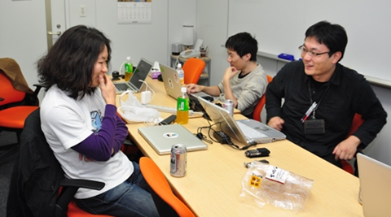
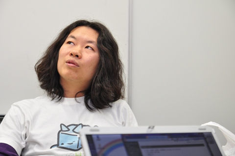
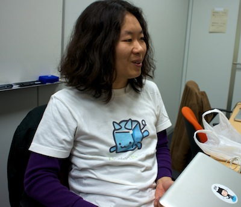
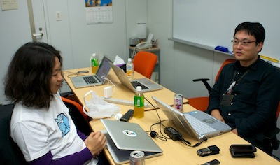
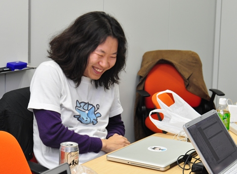
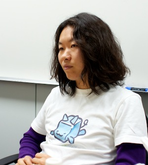

Rubyist Hotlinks 【第 29 回】 松田明さん
はじめに
著名な Rubyist にインタビューを行う企画「Rubyist Hotlinks」。 第 29 回となる今回は、日本における Ruby on Rails の第一人者で、Ruby のコミッタでもある松田明さんにお話を伺いました。松田さんは、フリーランスとして Rails プロジェクトをわたり歩いています。今回長時間に渡るインタビューでは、フリーランスという立場のあり方やソフトウェア開発の話にとどまらず、趣味の音楽や食べることについても、「こだわり」ということについても興味深いお話を語ってくれました。音楽との接し方が普通じゃない……、からこそ、プログラマとしても突き抜けているのでしょうか。
では、お楽しみください。

プロフィール
地域 Ruby コミュニティ “Asakusa.rb” の発起人であり、自称「角谷さんにプロデュースされた Rubyist」である松田明さん。代表著作は共著の『Rails3 レシピブック 190 の技』、監訳の『Head First Rails』。
- 好きな言葉
- “Don’t Repeat Yourself”
- 尊敬する人
- まつもとゆきひろさん
- ご本人のサイト
- http://blog.dio.jp/
インタビュー
- 聞き手
- ささださん
- 語り手
- 松田明さん1
- 野次馬
- Asakusa.rb2 メンバーs（角谷さん3、西村さん4、小澤さん5、柴田さん6、三村さん7、菅井さん8、郡司さん9）、ほか
- 日にち
- 2011 年 11 月 8 日
- 場所
- 秋葉原ダイビル 13F (ささださんオフィス、裏では第 132 回 Asakusa.rb10 を併催)
目次
プロフィール
ささだ 本日はどうぞよろしくお願いします。
松田 よろしくお願いいたします。
ささだ 松田明さんへのインタビューということで、早速始めたいと思います。まずは生年月日、現住所、家族構成などを。
松田 普通に言えばいいんですかね。
ささだ 誕生日を言って「後でプレゼントよこせ」とか（笑）。いえ、生年月日ズバリじゃなくても、どれくらいの年代とかでもいいですよ。
松田 生年月日は 1977 年 5 月 12 日です。今年で 34 歳ですね。若手だと思っていたのに、いつの間にか。
ささだ 私も今度の 20 日には 32 歳になっていて、5 ビットじゃ足りない11。
一同 （笑）
松田 30 歳を越えたら早いですよね。
西村 人生下り坂ですよね。
松田 この前の RubyConf12 の時に松江の高尾さん13と色々お話ししたんですけど、『この若造最近がんばってんじゃねぇか』って思ってたら自分より年上だったのを知って失望した、みたいなことを言われました。おっさんですいませんねぇ、みたいな。
一同 （笑）
ささだ 住んでいるのは浅草？
松田 浅草です。はい。
ささだ 家族構成。
松田 現在は妻と娘と住んでいます。そしてもう一人、多分今月に産まれる予定です。来週か再来週ぐらい？14
ささだ じゃあ、その頃は Asakusa.rb どころじゃないと。
松田 まあ僕が産むんじゃないので。見てるだけなので。頑張っていただきたいですね。
一同 （笑）
好きな言葉、座右の銘
ささだ 好きな言葉、座右の銘を。
松田 座右の銘とか考えたんですけど、あまりなくて。Rails オタクらしく、 “Don’t Repeat Yourself”15 でどうでしょう。
角谷 “Web development that doesn’t hurt”16 ではない？
松田 それは売り文句と言うか、マーケティングワードなのでちょっと違いますね。
ささだ 繰り返しは悪。
松田 結構いい言葉ですよ。例えば仕事やっていて同じことを 2 回繰り返しているときは、たいてい仕事のやり方をなんか間違えてるんですよね。
ささだ お昼ごはんとか、二度と同じ所に行かない。
松田 ああ、そうです。それはポリシー。
ささだ それは関係あるんですか。
松田 そういう意味でもまあ、自分の腹に落ちる言葉ですね。
角谷 ランチは “Don’ｔ Repeat Yourself” と。
松田 そうですね、ランチはなるべく同じ店に 2 回行かない、というので今まで三十数年間生きてます。
郡司 お昼ごはんは二度と同じ所に行かないというポリシーはすごいですねえ。そのポリシーは、今でも守られているのですか。
松田 まあ原則としては。
ささだ すごいなあ。
西村 足りなくならないですか？ それって。今は白金台のクックパッド社17に常駐していらっしゃると思いますが、オフィス周辺のお店に行ってしまうと、だんだん遠くに行かなくてはならなくなるとか。
松田 なるんですよ。だいたい同じ職場に 3 ヶ月とかくらい勤めると、その周辺のランチのお店のカバレッジが 100% になる18ので、そうすると次の職場に行く。
一同 （笑） 
角谷 次の現場に行くしかないと。
松田 一箇所の現場に定着できないんですよ。それがあって。
郡司 それで職場がどんどん変わっていたんですね。ようやく今その理由が分かりました。
尊敬する人
ささだ 尊敬する人。
松田 これも考えておいたんだけどなあ。いっぱいいるんですよね。知らない人を言ってもしょうがないですよね？
ささだ いいんじゃないですか。このインタビュー記事を読んでいる人は、調べたりできるので。ミュージシャンとかが多かったりしますか？
松田 ミュージシャンとかは、あんまり。その人の音楽が好きというだけで、むしろ人物として尊敬できる人は少ないです。例えば、フェイバリット・ミュージシャンを 1 人挙げるならベートーヴェンとかになっちゃうんですけど、人物としてはヤツはちょっとどうなのよ、と。
ささだ なるほど。
松田 尊敬する人は、まあ無難に言うと、まつもとさん19ですね。まつもとさんは総合力というのかな、絶対勝てないなぁと思いますよね。
ささだ ああ。そんなこと言わずにぜひ勝ってください。
松田 いやいや、まあ勝ち負けじゃないんですけど。あれだけバランスよく何でも出来る人、なかなか居ないよなあと。あと、角谷さんは尊敬しています。
一同 おおー。
角谷 取ってつけたようなお言葉、ありがとうございます。僕も松田さん尊敬しています。
一同 （笑）
松田 尊敬している人は多いですね、本当。やっぱり人間 20 年 30 年生きていると、大体どこかしら突出した何かがあるじゃないですか。良いところと言うか、この人はこういうところが素晴らしいよね、みたいな。それはまあ、人の欠点じゃなく良いところを見ると、誰でも尊敬したくなるじゃないですか。
ささだ じゃあせっかくなので、角谷さんのいいところを。
松田 角谷さんのいいところはねえ、あれ、なんだろう？
一同 （笑）
柴田 むむむむ。
ささだ いまのは良い切り返しでしたねえ。
松田 なんか、すごく偉い人なんだけど、そうじゃないところ。難しいな、何だろうな。
ささだ 人柄が。
松田 人柄ですね。人間力。
ささだ 人間力。
松田 あとはそういうので言うと CRuby のコアコミッター20は大体みんな（いい意味で）頭のおかしい人ばかりなので、皆さんすごく尊敬しています。
代表作
ささだ はい。では、代表作。
松田 代表作は Asakusa.rb じゃないですか21。
一同 おおー。
郡司 最近だと、 RSpec を irb で対話的に実行できるやつ22とか作ってませんでしたっけ。
西村 Kaminari23 とかはどうですか。
松田 そういう Ruby on Rails で開発に使うための gem24 的なやつをぽこぽこと作ってはいるんですけど、代表作ではないですね。自分が作りたいから作ったわけじゃなくて、必要にかられて作っているものなので。Kaminari とかが代表作と言われると、うーん。Kaminari は GitHub25 でウォッチ数26がすごくて、どのくらいだろう（ネット検索して）今だとウォッチ数が 1866 とかなんですけど27。
一同 おおー。
松田 注目度で言うとこれなんですけど、Pagination28 ライブラリ29の人と言われるとちょっと違う。作りたいわけでも専門家でもないので。代表作欲しいですね。 Asakusa.rb 以外で。
ささだ Asakusa.rb の話は、長くなりそうなんで後にしましょうか。著作は？
松田 著作は、最近「Rails3 レシピブック 190 の技30」というのを共著で書きました。Ruby on Railsの本ですね。

ささだ 買っといたほうがいいんですか？
松田 今のところ他に類書がない31ので、Rails でアプリ開発をしようと思ったら買っとくべきですね。あと翻訳というか監訳で 「Head First Rails32」というのがありました。それから、あとは雑誌とかですね。

郡司 WEB+DB PRESS33 の、Rails3 の中身の解説をしていた記事34がすごい良かったと思うのですけど。あれは何かの本に組み込んで出したりする予定はないんですか。
松田 いや、ないです。
郡司 内容として古くなってしまうからですかねえ。
ささだ Rubyist Magazine という雑誌がありまして。ちょっと古くなったような記事を、改稿して投稿していただくのも全然ありなので、どうでしょう。原稿料出ないですけど。
一同 （笑）
松田 あの記事は本当、おかげさまで好評をいただきまして。あの記事が掲載された号は一時売り切れちゃって、Amazon で 1 万円とかプレミアム価格がついてましたね。何事だ、ってびっくりしました。
一同 （笑）
角谷 今なら 10 周年 DVD35 に収録されていますので、読みたい人はそっちを買いましょう（笑）。コラムといっしょに楽しんでいただければ36。あれはよかったですよね。あの時点、Rails3 が出てすぐの段階で「Rails3 ではこんなことができます」という話じゃなくて「Rails3 とは何か」というのが解説されていたのが日本語で読めて、すごいよかった。
柴田 1, 2, 3 のテーマみたいな切り口が良かったですね。 3 はみんなの Rails 。
松田 ああ、そんなだった気がしますね。
柴田 1, 2 は忘れたけど。
一同 （笑）
西村 DHH37 が敷いたレール、みたいな話でしたね。
柴田 「レールはみんなの心の中にある」って。
松田 ああいう精神論っぽいやつは、だいぶ稲尾さん38に削られてですね。禅とか書いたような気がしますが、削られましたね。
一同 （笑）
角谷 あの Railtie39 のくだりとか良かったですよ。 Engine40 とか。だいぶ忘れてるけど。 Rails は Rails Engine という拡張する仕組みがあって、 Rails もだいたいその仕組みでできているので、最後に Railtie でよっこいしょっと全部一緒にする、みたいな枠組みになっているんですよ、という話を Rails3 が出てすぐ、José Valim41より早く言っているのがえらい。
ささだ それってすごいことなの？
角谷 Rails3 が出てすぐの段階で、新機能とかの話じゃなくて、 Rails3 っていうもの自体がどういう進化を遂げてこういう形で結実してますっていう本質というか何というか。
小澤 それを海外でもまだ誰も言っていない段階で説明しているのがすごいと。
ささだ どのへんでそういう考え方とか着想を得るのですか？
松田 書き物に関しては、ドキュメント読めばわかるようなのとか、触ってみました、っていうだけの技術文書は大嫌いで、ソースコードの行間を読まないとわかんないようなことが書かれてないと面白くないですよね。読者としても。なので、レコードのライナーノーツみたいなのを書きたいなと思って書いてます。って、ニュアンス伝わりますかね。あとは、Rails のソースコードを読んでいるからじゃないですかねえ。まあ、当たり前のことを言うと。あとはチャットとか。
柴田 IRC？
松田 いや、Campfire ですね。Rails の人たちは。
ささだ Rails のソースコードを読むと言っても、たしか 10 万行以上ありますよね。全部読むわけにはいかないじゃないですか。
松田 だいたい全部読んでるんじゃないですかねえ。逆に最近 Ruby に入門した42ので、 Ruby のソースの読み方を知りたいです。
一同 （笑）
角谷 新参コミッターなので。
郡司 「Ruby ソースコード完全解説43」の最新版が望まれる44。
ささだ まあ C 言語の話は置いておいて45、Rails のソースコードを読む話に戻しましょうか。
松田 Rails に関しては、ソースコードそのものを読むだけではなくて、コミットログ46を読んでます。
ささだ でも読もうと思ったときには、すでに膨大なコミットログがあるわけじゃん。過去からの経緯を追わないと、今何をやっているか分からないよね？
松田 まあ、そうですね。
ささだ それは読もうと思ったときに、過去のものは全部読んでから、新しいものを読むんですか？
松田 そうですね。読むしかないですよね。
ささだ おお、すごい。
松田 いや、Rails なんて新しいプロダクトなので。 Ruby とかと違って、15 年とかやっていないので。
ささだ でもコード規模はすごいですよね。10 万行もソースコードを読みたくないなあ。
一同 （笑）
松田 中身がだいたい想像つくんですよ。 Rails とかだと。やってることは難しくないので。
ささだ なんかこう、Rails のソースコードって、変なところにぐちゃぐちゃ飛んだりするじゃないですか。あれが読むのがつらそうなんですが。それはあまり苦にならない？
松田 いや、つらいです。
一同 （笑）
松田 あとは書いてる人たちを知ってるからじゃないですかね。Ruby もそうだと思うんですけど、コミットしている人を知ってると、あの人はこういうコードを書くからなあ、って分かるじゃないですか。
ささだ それは何人くらい？
松田 今の Rails のコミッターは 10 人かそこらです。
ささだ 10 人くらい押さえておけば大体分かると。
松田 大体クセは分かります。
西村 Rails のコミッターって、Rails のサイトに顔写真が出ていますが47、人数はいつも決まっていますよね。上位何人みたいな形で、あまり貢献していない人は外されるんでしたっけ？
松田 まあ、なんとなく卒業しますよね、コミッターって。
西村 いなくなる？フェードアウトした人が消えるだけで、意図的に足切りをしているわけではないんですね。
松田 そういう意味で、僕もコミッターが辞めた瞬間に立ち会ったことがないから分からないんですけど、何となく辞めていきます。そういえば Ruby ってコミッター辞めないですよね。
ささだ そうですね。
松田 Rails コミッターは歴代で言うと 20 人くらいは居ると思うんですけど、でも今、現役は 10 人くらいですね。
西村 辞めると言ったらコミット権はなくなっちゃうんですか。
松田 その場合が多いですね。まあでも ex コミッター48でリポジトリ自体へのコミット権がまだある人もいるので、よくわかんないです。そこらへんはまあ境目は曖昧な感じで。
西村 ルールがあるわけではないと。
松田 そうですね。実際リポジトリ49にコミット権があるけどコミッターじゃない人もいるので、曖昧ですね。
ささだ しかし、Rails のコードって何を使って読んでるんですか？エディタとか。
松田 Git の git log コマンド50 で。
ささだ git log コマンドですか。
松田 あと Vim51？
ささだ ソースコードを追い始めてから git log というか Changelog52 を読むのは分かるんですよ。大きなコードベースは Vim で読むのですか。
松田 そうですね。 ctags53 とか付けてると、適当に読みたいところに飛べたりするじゃないですか。
ささだ それで苦もなく読めるものですか。ぜひ Rails のコードの読み方講座をやっていただきたいですねえ。最初にアウトラインさえ分かってしまえば、これを知りたかったらこれを読めばいいとかが分かると思うんですが、そこまでがハードルになるのではないかと思って。
松田 僕の場合は、読む時もパッチ書く時もそうなんですけど、読もうと思って読んでいるのではなくて、必要にかられて読むんです。壊れてるから読むんですよ。挙動がおかしいからとか。
ささだ そのときに、私なんかだと Rails にどういうコンポーネントがあるかとか分からないから、どこから読めばいいか分からない、となってしまう。
郡司 Rails の全体構造を知るには、先ほども出て来た WEB+DB PRESS の松田さんの記事を読むといいかもしれませんねえ。
角谷 そういえば松田さんってよく Rails 壊しますよね、っていうか Rails が壊れているところに遭遇しますよね。あれは何かコツがあるんですか？
松田 そうですね、バグは頻繁に踏みますね54。コツは、なるべく新しい Rails を使うことと、 Rails を信用しないことです。
ささだ なるほど、自分が悪いと思ってはいけないと。
松田 すごく良く出来ているフレームワークなので、「俺がこう動いて欲しい」と思ったとおりに書いて動かなかったら、それは Rails のバグなんです。
西村 前回のインタビュイーの Yugui さんも Ruby について同じ事を言ってましたね。とりあえずメソッドを書いてみて、なかったらそれは Ruby が間違ってるんだと55。
松田 Ruby でそういうのはあまり感じたことがないんですよね。 Ruby は Rails 以上にすごく良くできてるので。当たり前ですけど。 Ruby は毎日使ってても、あまり不満はないんですよね。 バグらしいバグは、1.9 の出始めの頃とか以外はあんまり踏んだことないですよ。
角谷 某プロダクトのメンテナの方が、何か言いたそうにしてますね。
柴田 よく Ruby のバグを踏むんですが。
郡司 tDiary というプロダクト56がありまして、ということですね。よく Ruby の地雷を踏むという57。
一同 (笑)
ささだ ちなみに、最初に Rails を触り出したのはいつぐらいのバージョンだったんですか？
松田 1.0 くらいですか。そんなに早くないですね、日本では。
ささだ 1.0 って早くないんだ。
角谷 日本で「これだ」と食いついていたのは 0.12 とか 0.13 の頃ですね。
松田 0.13 くらいでしばらく止まってた時期がありましたねえ。
郡司 高橋さん58が WEB+DB PRESS に記事を書いていたのも、確か 1.0 になる前でしたね59。
ささだ ああ。もりきゅうさんと高橋さんが書いた記事でしたね。
松田 そうですそうです。その頃は存在は知っていたのですが、基本は職業プログラマーなので、当時はそんな仕事がなかったので自分では触ってなかったですね。
角谷 日本では荻野さん60のせいで Rails の普及がだいぶ遅れたので。
松田 そうなんですか。
角谷 いつだっけ。 2004 年でしたっけ。 DHH が RubyConf でプレゼンをしたときに、日本の Rubyist が練度が高すぎて「また Web のフレームワークが出てきたわー」みたいな感じで。
ささだ 高橋さんは興奮していましたが。
角谷 高橋さんは ActiveRecord61 に興奮をしていたんだけど、興奮のしかたがよく分からなくて人に伝わらない感じだったので。るびまのレポートは荻野さんが書いていたのですが、ものすごいスルーしていて。
西村 5 行くらいでしたね。
角谷 また MVC62 のフレームワーク63 が出てきたわー。この兄さんプレゼンうまいね。おわり。みたいな。
一同 (笑)
角谷 そこの伝わり方の温度差みたいなのが、初動というか初速ではあったかも。
ささだ 私が初めて行った RubyConf がちょうどその 2004 年だったんですけど、 DHH の話を聞いて MVC がよく分からなくて、英語もよく分からなくて「何しゃべってんだこの人？」みたいな感じだったんですが、同席していた高橋さんが「これはすごい！これはすごい！」って大興奮してるんですよ。ああそうなんだ、すごいんだって。まさかこんなにすごいことになるとは、そのときは全然分からなかったですね。Rails は 2004 年にはシリコンバレーとかでブレイクしていたんでしたっけ。
郡司 オライリーが取り上げて、けっこう話題になっていましたね。
角谷 るびまっていうオンライン雑誌がありまして、そこでチャドファウラーという人の記事の翻訳したものが載っているんですけど、そのへんの前後のこと、事情がけっこう読みやすく載っておりまして。RubyConf の何かが変わった年、というのがこの年らしいんですよ。チャドが言うには。それまではいわゆる Ruby のコミュニティの人たちのトリートメントというか、メーリングリストの人たちが集まるという感じだったのが、なんか違う感じになったというのがあの年らしいんですよ。
松田 あれはいい話でしたね。
角谷 そのときのチャドのとまどいみたいなものが語られていて。いい話だから Rubyist のみんなに届けたいと、僕と O-Show64 とで頑張って翻訳しましたので、まだ読んでない方は是非読んでください。ちょっと長い記事ですが。
ささだ るびまの Rails の記事といえば、もりきゅうさんの連載とかもありましたね。 RSpec の記事とかも。
柴田 目の前に RSpec の記事の著者がいますね。
角谷 黒歴史ですが65。
ささだ Rails の話はこんなもんで。まあ後でまた何かあれば。
Ruby に関して
Rubyist になったきっかけ
ささだ Rubyist になったきっかけ。やっぱり Rails ですか？
松田 うーん、そうですよねえ。 Ruby という言語について初めて聞いたのは結構古くて、学生の頃とかなんですけど。まあでも自分で触ってみたのは、年代的には Rails が出た後だと思います。 
ささだ Rails を仕事で触り出して、Ruby を触るようになった？
松田 Rails よりも前に Ruby には触ってました。ピッケル本66とかで Ruby の勉強をしましたね。でも多分、Ruby on Rails の爆発的な普及というニュースがあって、それでやってみたくなって、 Ruby の仕事というか Rails の仕事を受注して、という感じでないと僕みたいな職業プログラマには届かないですね。

ささだ やっぱりお仕事が本格的にやりだしたきっかけであると。
松田 そうですね。
現在の Ruby との付き合い
ささだ 現在の Ruby とのつきあい。コミッター？
一同 (笑)
松田 はい、つい先日 CRuby コミッターになってしまいました。微力ながら、やらせていただきます。
ささだ 最近、 gem まわりを何とかしようという感じの。 Rails が分かる Ruby コミッターが欲しいという話でしたっけ。
角谷 まつもとさんの期待が述べられてますね67。まつもとさんの、ああいう「この人にこういうのをやって欲しい」という感じのは、普段あるものなんですか。
松田 まあでも、それも後付け的な感じではあるんですけど。
ささだ その場のノリで？
松田 経緯を言うと、 RubyConf 2011 の最終日に、あの、角谷さんのパスポート事件68とか色々あってまつもとさんとたくさん話す機会があって、僕が一人で宿を取ってることを知って、まつもとさんが「だったら私の部屋に来なよ」という感じで言ってくれて、行きます行きますという感じで。
角谷 ナンパされて付いて行ったと。
一同 (笑)
松田 まつもとさんの部屋に泊めてもらって朝まで色々としゃべったんですよ。そのときに身の上話とか人生相談とか Ruby の話とか Rubyist の話とか宗教の話とか、色々してですね、で、なんか多分人生相談的なところから、「松田さん、 Ruby のコミッターにならない？」と言われて。
ささだ 何を相談したら Ruby コミッターに誘われるんですか。
松田 色々あったんですよ。すごい軽ーく誘われました。「コミッターにならない？」って。
角谷 Ruby Inside でも記事になっていました69よね。今日ぐらいに。
松田 まあでも「コミッターにならない？」と言われたときは、「イヤです」って 2 回くらい断ったんですけど。
一同 (笑)
角谷 Matz70 三顧の礼。
柴田 「いやいや、そんなこと言わないでさあ〜」「Matz が 3 回言うならしょうがない」。
角谷 これは古文で出るよ。情報の授業で。
松田 Ruby のコミッターとかって、怖いじゃないですか。
ささだ いやいや、そんなことないですよ。
郡司 怖いですよね。
角谷 日本の歴史とか古代史とか詳しくないといけないし71。
松田 なんかほんと、変態ばっかりじゃないですか。
郡司 スーパーマンですよね。
松田 で、僕は多分自分はちょっと違うなと思っていて。
郡司 いやいやいや。松田さんも十分スーパーマンですよ。
松田 スーパーハッカーとか天才クリエイターとか、そういうあれじゃないんですよ。僕は一職業プログラマだと自分ではわかっているので、基本的に仕事ドリブンなハックしかしていなくて。だからちょっとコミッターというのとは違うんじゃないですかね、ってまつもとさんには言ったんですけども。まあまあまあ、いいからいいから、って。
ささだ 中学生でもなれるんですよ72。
一同 (笑)
西村 普通の中学生ではないですけど。
松田 理系でもないんですが、とも言ったんですけど。そしたら、アイスクリーム工場の人もなれるんだよ73、って。
一同 (笑)
ささだ 特別なものではないと思いますけど。変に意識しないでもいいと思いますけどね。私の場合は Ruby のコミッターというのは大きなウエイトを占めていると思います74が、松田さんの場合はそんなに、まだ始めたばかりだし、 Ruby との関わりはコミッターだけじゃないと思うんですよ。
松田 うんうん。
ささだ たとえば Asakusa.rb だったり、 Rails の偉い人だったり。何と言えばいいですかね。一番ウエイトがあるもの。
松田 最近 RubyKaigi で来日した Fabio75 が使っていた言葉は、エバンジェリストですね。
ささだ おおー。
松田 便利な言葉だなー、と。
角谷 でも Rails 方面はほら、アクティビストという言葉があるじゃないですか。
松田 はいはい。ありましたね、過去に。
角谷 あれはもう流行らないんですか。
松田 もう流行ってませんねえ。
ささだ それは何だったんですか？
角谷 Rails 本体を作るのではなくて、ドキュメントだったりとか、バグマッシュ76とか、まわりの活動とかを含めて積極的にやっている人みたいなのをいっときそう言っていたんですが、最近聞かないので。
西村 Gregg Pollack77 とか自認していますよね。スクリーンキャストをたくさん作って、人々にたくさん伝えるような。
松田 アクティビスト活動は Matt Aimonetti78 なんかが盛んにやってたんですけど、とあるポルノプレゼン79がきっかけで失脚してしまって。周辺の人もやめちゃったりとかして。それでちょっと失速した感じですね。
ささだ 失脚とかあるんだ。
角谷 失脚というか、コミュニティだと評判が大事ですからねえ。プレゼンテーションひとつひとつは大事ですよ。でもあれももう、けっこう前ですよね。
松田 3.0 が出た頃だから、そうですね。2 年くらい前ですかね。
ささだ なんかみなさん良くご存知ですね。アクティビストみたいな活動はそもそもなくなったのか、それとも自然になったのか、どっちなんでしょう。
松田 枠組みとしては、あまり流行っていないですけど。
ささだ そういうサポートが充足したのでなくなった？
角谷 足りてるわけではないと思います。それはそうと、Fabio の名前が出ましたが、エバンジェリスト業みたいなのは、いいですよね。Fabio はいいですねえ。
松田 彼はエバンジェリストですよね。
ささだ エバンジェリストというのは、誰に何を届けるんですかね。 Rails だったら「Rails 使ってー」っていう？
松田 そうですね。Fabio のすごいところは、ちゃんと現場に浸透させていることですね。ブラジルとか南米で巨大なマーケットを創りだしているところです。単に言語を作っているとか、単にハックしているというだけでは達成できないものなので。
角谷 あとは Fabio に関して言えば、彼はブラジルでのソフトウェア開発の仕方というの変えていきたいという思いもあるみたいで。ブラジルの人たちのソフトウェアへの関わり方みたいなものを Ruby を通して変えたい、ビジネスのやり方もそうだし、プログラマとしての態度みたいなのを含めて変えていきたいんじゃないかなあ、と。
ささだ エバンジェリストというと伝えることが目的というイメージなんですが、そうじゃなくて今の話を聞くとビジョナリーというか、こういうものを達成したいので、 Ruby を使って、というふうに聞こえますね。
角谷 でもどっちが先なんですかねえ。たぶんそれは「たのしい Ruby」というやつなんじゃないかと。Ruby のたのしさを突き詰めていくところにある「何か」みたいなのに勝手な意義を見出して、これはいいものだからお前らも使おう、と。ああいう赤いピルを配る活動80には、個人的にシンパシーを感じますね。
松田 日本では、 Ruby 楽しい楽しいと言っている人はけっこう多いんですけど、あまり Rails でそれを言っている人は居ないんですよね。
ささだ Rails は楽しくないと。
松田 いや、楽しいと思うんですけどね。僕は大好きなんですけど。意外とその、斜に構えて Rails を語るときに妙に技術的な切り口だったりとか、というのが多いんですよね。
ささだ 楽しいというのは、こんな面白いのが出来た、とかそういう楽しさ？
松田 何だろう。 Ruby の楽しさを、さらにエンハンスしたような。 Ruby で何が作れるかって、しょせんスクリプト言語で普通にそれだけを使って作れるものって、せいぜいちょっとしたコマンドラインアプリだったりするじゃないですか。
角谷 奇妙な言語とかも作れますよ81。

ささだ それは、ちょっとしたコマンドラインアプリでしょう。
一同 (笑)
松田 ともかく、あまり派手な成功体験を得るのが難しいんですよ。ところが、実際いま僕らが主戦場にしているような現場の開発って、 Web アプリを作っているわけで、 Web アプリを作るためには、ものすごい高度なことをやらないと、っていう世界だったはずなんだけど、アーキテクト様がいて、兵隊が何十人もいて、という体制を整えて作らないと今までできなかったようなはずのことが Rails だったら 15 分でできるよ、と。そこは純粋に楽しいですよね。
ささだ さっきの Fabio さんの話だとブラジルの IT 市場に対してなにかしらのインパクトを与えたいという目標というかゴールみたいなのがあったと思いますけど、松田さんにはそういうのあるんですか。エバンジェリストと言ったときに、誰に何を伝える？
松田 それが多分 Fabio と器が違うところで。ないんですよ。
一同 (笑)
ささだ 伝えてないじゃん。
松田 僕は単に自分がこれだけ楽しいぞと、幸せになっているよというのを自分だけの胸のうちに仕舞っておくのはもったいない、みんなやろうぜというところの域を出ていなくて。
ささだ なるほど。
松田 Fabio ほどの壮大な野心みたいなものはあまりないですね。
ささだ エバンジェリストのランクを今後は上げて行って下さい。
一同 (笑)
郡司 エバンジェリストにはレベルがあるんですか。
ささだ 何がしたいかだと思うんですよね。松田さんは、今が楽しければいいみたいな。そういうやり方もあるだろうし、どうなんですかね、その辺は。
松田 なんか人生相談みたいになってきた。
一同 (笑)
松田 それとはちょっと違うところでよく聞かれるのが、今フリーランスでずっと自分のやりたい事だけやってるんですが、「起業すれば？」とよく言われるんですよ。自分の会社やりたくならないの？と。それもないんですよね。自分でこういうビジネスを持ちたいとか、そういうビジョンは全くなくて。
ささだ 会社をすぐに移転しないといけなくなるから。
松田 まあそれもあるかもしれませんが。ランチが。
角谷 浅草だったら、いっぱい食べるところありますよ。
松田 ありますねえ。まあ多分それと一緒で、あまり壮大な野望はないですね。
ささだ なるほど。
松田 角谷さんとかはアジャイルを通して何かこうアジャイルエバンジェリスト的なことをやられているじゃないですか。
角谷 あまりエバンジェライズしてないですけどね。
松田 それも何かでっかいビジョンがあったりするんですか。
角谷 ないですよ。
ささだ 角谷さんはよく、あまり幸せそうじゃないエンジニアに対して、いやもっと幸せになろうよといつも言ってる気がする。
角谷 そうですね。
ささだ だから、そういうことが言いたいのかなと。伝えたい人は不幸せなプログラマで、伝えたいことは幸せになる方法っていう、何かそんな。
角谷 ああ、そうですね。僕の話をしていいのかどうか。そういう意味だと自分をどうアイデンティファイするか、僕も自分が、松田さんの言っている一プログラマ、職業プログラマだと思っているので。だから、キャラが足りないんですよね。もっとそういう人が増えればいいと。
ささだ キャラって、そっちか。角谷さんのキャラをもっと濃くするのかと思った。ビックリした。
角谷 そっちじゃなくて。こういうことをやろうっていう時に、やったら結構できるんだけど、いやいや自分なんて、みたいな人が結構いるでしょう。そうじゃなくって、もっとやろうよと。自分で出来る範囲と言っても知れているんですよ。もっとみんなやってよと。どっちかというと、俺じゃなくてお前らがやれというのに近くて。じゃあそのために何を話すかってなると、結局は自分が思っていることしかないので、そうなると「楽しいだろ？ Ruby 楽しいだろ？」みたいな話ぐらいしかない。
ささだ 松田さんは、そういうのないよね。「こうだろう？」みたいなの。
角谷 いやでも結構、この間の RubyKaigi のトークとかが、わりとそれに近いですよね。たのしい Rails 「の開発」。もっとやればいいのに、という。
ささだ ああ。押し付けがましくて。
松田 そうなのかな。
角谷 松田さんはそういうメッセージが毎回あるように思います。「何でやらないの？やればいいのに」、みたいな。たとえば mame さん82の Quine83 とかは、やればいいのにと言ってもなかなか難しいけど、 Ruby コミッターのブレーキが壊れた感じじゃなくって、やれることをやればいいという話をいつもされてるんですよ。わりと身も蓋もないところがいい。いいですね。
松田 ありがとうございます。角谷さんには伝わっていて嬉しいです。
ささだ すいません伝わってなくて。
一同 (笑)
松田 で、それで言うと僕は、角谷さんが自分でやるんじゃなくて皆に投げたいっていうところで拾われたクチで、 Rubyist になったきっかけというのの一つが、あの、文字通り Ruby を使い始めたという意味じゃなくて 「Rubyist になった」というので言うと、たぶん Rubyist “a_matsuda” 的なものはだいぶ角谷さんにプロデュースされたというふうに思っています。
角谷 おおー。
ささだ おお、角谷さんはプロデューサーだったのか。
角谷 僕はプロモーターですから。プロモートするのは得意ですよ。人にやらすのが仕事ですから。
ささだ 是非僕も何かに。
角谷 ささださんはもうやること決まってんだから。それを早くやってくださいよ。
一同 (笑)
ささだ 何かこう、何をすればいいか分からないという人に対してお前はこれをやれ、という仕事？
松田 何ですかね、 Asakusa.rb に関しては、ちょうどこの 3 人だったと思うんですけど、角谷さんとささださんと僕でなぜか地域コミュニティをやるって話になったときに、なぜかぽっと出の僕が表に立って角谷さんが裏からプロモートすると。
ささだ なるほど。 Asakusa.rb は今日は何回目でしたっけ。
角谷 今日は 132 回目です。
ささだ いやあ、続きますねえ。
角谷 Asakusa.rb の話をしていいんですかね。元々は、私が松田さんと初めて会ったのが RubyKaigi 2008 の後でしたっけ、のちのえにしテックの CTO の人が漫画喫茶か何かに泊まってて、次の日に行くところがないからって、お昼ご飯を食べたいので誰か食べませんか84って言ったら松田さんが来たんですよ。そのときの話で、ちょっと Rails 勉強会85が何か最近違うんだよねという話をしていたので。
松田 そうですね。そのころちょうど「勉強会疲れ」しておりまして。勉強会って何かみんな好きだよね、でも勉強会って何もプロダクティブじゃないし、なんか前向きじゃないよねみたいな感じでいて、何か違うことをやりたいと。
角谷 ということを松田さんがおっしゃっていたので、じゃあ松田さんやりましょうよ、松田さんがやろう、松田さんで行こう、みたいな。
ささだ ちょうどみんなあの辺に住んでるし。
角谷 そういう意味だとあれですね、高井86がやってた Akasaka.rb87 がないと、多分始まらなかった。ノリとしては。
松田 そうかもしれない。
角谷 あっちが赤坂ならこっちは浅草だぞコノヤロウみたいなのが最初はありましたから。
松田 ですね。
角谷 昔はよく間違われていたんですよね。 A から始まるので。赤坂ですか？みたいな。もう間違えられなくなりましたね。
一同 (笑)
郡司 向こうはどうなったんですか？
角谷 向こうはどうなったんですかねえ。
三村 解散したという話もあるけど、またやるみたいな話もあるみたいですよ。
松田 あれは高井さんが新橋で飲みたくなったときが meetup です。
角谷 そうそう。で、ああ見えて高井はなかなか良くて、一番最初の東京 Ruby 会議のときにそういう話をしていて、地域.rb って誰に断らずともやって良くて、名前を付ければこうやって高井が飲みたいときに誰かが声をかけて招待講演だって言って、呼びたい人を呼べるんだからみんなもっと勝手にやるべき、みたいなことを一番最初の東京 Ruby 会議で東京の人達に向けて言っているんですよ。みんなもう忘れてると思うけど。誰も覚えていないと思うけど。
松田 「地域.rb のご提案」ですね。
角谷 そう、地域.rb のご提案、というのがあって、あれがすごくいい話だった。きれいな高井の話。
小澤 つくばで開催された RubyKaigi 2008 でしたっけ。小ホールとかで。
角谷 ニフティさんのところでやったやつです。東京 Ruby 会議の時なので。つくばの RubyKaigi 2008 のすぐ後ですね。なので、Asakusa.rb の助産婦さんですね、高井は。
一同 （笑）
小澤 そう言われたら、彼はなんと言うだろう。
角谷 わからないですけども。
ささだ Asakusa.rb の一回目が、浅草のなんか飲み屋の 2 階で88。
松田 そうですね。あの店できたばっかりだったんですけど。すぐ潰れちゃいましたね。
一同 (笑)
ささだ なんか最初は転々としてましたよね。
松田 そうですね。
角谷 フィレンツェとかでもやってましたよね89。
松田 フィレンツェはまあ浅草じゃないんですけどね。いいとこなんで是非また遊びに行ってあげてください。
ささだ いやいやいや、上野90とか秋葉原91とかも浅草じゃないですけど。
一同 (笑)
郡司 浅草でほとんどやっていないですね。
角谷 「浅草」.rb を「日暮里」の「フィレンツェ」でやると。
一同 (笑)
角谷 できた当初は永和92も芝浦の方だったので。
西村 上野じゃなかったんですね。
ささだ いろいろ転々としたあとで、上野だ、みたいな。
松田 あれは本当、永和さんが上野に引っ越してくれたので、さっそく。
角谷 台東区だし。台東区ならいいだろう、と。
松田 本当、永和さんのおかげで毎週やらせていただいております。
角谷 インターフォン係もどんどん増えてですね、最初は私しかいなかったのですが、3 人くらいに増えて安定した開催ができるようになって素晴らしいですね。
松田 あとは大江戸 Ruby 会議のときにも言ったんですけど、毎週やってるのはレオ93のおかげですね。最近結婚式をされた。
角谷 ああ、そうですね。最近すばらしい結婚式をしていてですね。そのレオが、日程を調整しないほうがいいんじゃないかと言ったんですよね。
松田 そうですね。最初は僕は意図的に、この人とこの人とこの人には居てほしいから、この人とこの人とこの人が日程が合うところで、場所もみんなが来やすいところで、と、なんかこう、調整してたんですよ。それが今思うと負担だったんですよね。日程調整みたいなのを、チャットでいついつにしましょうか、とやってたのをレオが見かねて、もう毎週やればいいじゃんって言ってくれて、そうだね、じゃあそうしようと。でまあ、場所の調整というのが永和さんとささださんのおかげで要らなくなって、日程の調整がレオのおかげで要らなくなったので、今実質開催コストは、すくなくとも主催者としてはもはやゼロ。
一同 (笑)
柴田 行くだけ。
角谷 我々はフォーメーションをご用意しております。リマインドメールを出して。
柴田 じゃあ始めまーす、って。
松田 続いている秘訣的なものの半分は永和さんのおかげで、半分はレオのおかげ。
角谷 準備とか結局だれかが担当とかになってしまうとやっぱりつらいんですよね。なので、その、分散するというかなんか、うちの若いもの、みたいな、若いのやっといて、みたいな感じでやれるので。
角谷 毎週やりはじめたので、もともと Rails 勉強会＠東京じゃないやつをやろう、とか言ってたけど、もう倍くらいやってるんで。
一同 (笑)
小澤 あっちは月次じゃなかったでしたっけ？
角谷 勝負じゃないですけど、回数だけだったら勝った、みたいな。
ささだ でも松田さんあんまり最初からはいないよね？
松田 19:30 開始って早いんですよ。
一同 (笑)
小澤 開始時刻を遅らせますか。
松田 でもあれ以上遅いと夜中になっちゃうし。
ささだ まあ永和さんが問題なければという感じですかねえ。
松田 なかなか上野に出て来づらい職場で仕事をしていたりすると、というか白金台が田舎過ぎて…。困ったもんですね。
Ruby の好きなところ、嫌いなところ
ささだ 進みますかそろそろ。Ruby の好きなところ嫌いなところ。
松田 Ruby の好きなところ。言語としてということであれば、人間の自然言語に近いところ。
角谷 そういうことを言い出すとまた大変ですよ。
柴田 あちこちから。
松田 まあでも比較的そうじゃないですか。それは事実だと思うので。で、そこが多分好きなところでしょうね。ただ、まつもとさんが言うには、Ruby とは何かと言ったときに、言語仕様だけではないと。Ruby っていうのは、言語のことでもあるし、処理系のことでもあるし、コミュニティでもあると。ということを RubyConf でしたかね、言っておられて、本当にそうだなあと。なので、そういう意味で言ってよければ、好きなところは Rubyist なのかも知れないですね。
ささだ おー。
松田 それは本当、そう思います。僕そういう意味では、今まで結構いろんな、10 年くらいかな？仕事で色々な言語を使ったりしたんですけど、自分がコミュニティに入り込みたいと思うようなものは Ruby が最初でしたね。
ささだ おお。このコミュニティなら楽しそうだと。
松田 というのと、Rails だったので。Rails はあまりにもまだまだ未成熟な、というか出来上がっていない感があったので。自分でもやることがあった、ということですかねえ。
ささだ 完成度の低さ。
一同 (笑)
松田 でもなんか、不思議と、あれですよ。Matz is nice so we are nice94 っていうのはやっぱり本当で。あれって何なんですかねえ。他のコミュニティは知らないですけど、たぶん独特の文化ですよね。
角谷 他もべつに Nice じゃないわけではないのですけど。何なんですかねえ、Rubyist の、だいぶバイアスはかかっていますけど。ねえ。
松田 他のコミュニティはやっぱりその、ちょっとギスギスしている場合が多いんですよねー。俺のプロダクトの方がすごい、とか、あいつのコードはゴミだ、とか。Ruby 方面は、比較的お互い認め合って高め合う文化な気がする。多様性は善だからかな。
角谷 なんですかねえ。
ささだ ちなみに、松田さんが思い浮かべる Rubyist というのは、松田さんはあまり日本とか海外とか気にしないで見られていると思いますけど、ぱっと Rubyist と言うと海外の人を思い浮かべることが多かったりします？
松田 どっちもですね。それは文脈によるんですけど、日本のコミュニティでるびま的な方面で Rubyist というと、日本の Rubyist しか見てないし、逆に海外の Rails 方面で Rubyist というと、あれですよ Ruby Hero95 とか言っても日本人は出てこないじゃないですか。どこの Ruby だよ、っていう。そんな感じで何か本当に断絶しているんですよね。そこは非常に残念です。
ささだ そこに関して何とかしたいというのは、前から言っておられましたね。
松田 そうですね。
ささだ まずは松田さんに Ruby Hero になっていただくところから。
松田 (笑) 
ささだ Ruby の嫌いなところは？
松田 嫌いなところ。何だろう。言語仕様の細かい話になっちゃいますよね。そのへんはあんまりいいような気がする。
ささだ いや別に言ってもいいと思いますよ。
小澤 あとでささださんが「ぎゃっ」と言うんですけどね。
角谷 言語仕様の細かいところ、いいじゃないですか。
松田 マジコメ96書くのがめんどくさいです。
一同 あー。
松田 もうちょっと夢のあることを言うと、ひとつは、ブラウザで動かないところ。だから、やっぱりパソコンじゃないと動かないんだなあ、というのがありますね。
ささだ うーん。
松田 で、もう一つは IDE97 がないことですね。Java とか.NET とか方面の、あっちの IDE 文化の方から来た人に Ruby を勧めたときに必ず言われるのがやっぱり「えっ vi98 ですか？」「Emacs99 か vi しかないの？」と言われて、そこでやっぱりこの、あきらめちゃう人が多いので。
角谷 なんだろうね。
松田 いやでも、Ruby の IDE があればいいとも思わないんですよ。実際 Vim が一番楽ちんなので。どうしたらいいのかなあ、というのがまだ分からないんですけど。
ささだ そのへんのサポートが足りないと。
松田 足りないのかなあ。あるいは必要ないのか。
小澤 仮に Ruby に IDE がないのが問題だとして、IDE が欲しい人って、IDE の何の機能が欲しいんですかねえ。補完機能？それともプロジェクト管理機能？
角谷 リファクタリングブラウザ100が欲しいんですかね。
松田 そうですね。IDE がプロダクトの品質なり開発プロセスなりを何かしらサポートしてくれるというのが IDE 文化の人の間にはあって、Ruby には全くないので。エディタは単に文字を書く道具でしかないので、そこがないといきなり処理系とプログラマが向き合わないといけない世界なわけですよ。IDE が助けてくれないんですよ。そこがなんか辛いんですよね。最初ちょっと。
ささだ なるほど。
松田 だから僕が Ruby が嫌いというわけではないんですけど、人に教えるときにそこはよく訊かれるので、Ruby にあったらいいなと思うのはそういうところですかねえ。
小澤 Perl の IDE がどうなったのか。あるんですかねえ。Python の IDE とか。Ruby に対してそういう要望があるなら、あってしかるべきですよね。
郡司 スクリプト言語で IDE で開発するケースって、あんまり聞かないですよね。
角谷 PHP とかはどうなんですかね。
西村 Aptana101 ですかね。
松田 秀丸102じゃないですか。
一同 (笑)
小澤 秀丸は IDE じゃないですよ(笑)
松田 でも結構まじめな話、PHP な人は秀丸で書いている気がします。
角谷 Aptana とか、どれくらい使われているんですかねえ。Java とかの IDE に親しんでいる人が Eclipse っぽいやつで PHP も書けるとかだと分かるんですけど。
ささだ Eclipse のプラグインとかないんですか。
角谷 Ruby もありますよ。
松田 RDT103 でしたっけ。
小澤 いかにも IDE IDE したのって、VisualBasic104 とか Eclipse 系のイメージですよね。
角谷 何か、分からないんですよね。IDE があるって、いいことなのかどうかが分からない。Eclipse のいいところは、Java っぽくないんですよね。よく Java 界隈で Eclipse の良し悪しみたいなことを言われるんですね。あれを使うと Java が分からないというか、javac というのがあってコンパイルというのが実はあって、みたいな。
一同 (笑)
郡司 IDE だけ使っていると、IDE が裏で何をやっているかがブラックボックスになってしまうんですよね。だからコマンドラインツールの使い方も覚えたほうがいいよ、そうすれば IDE をより良く使えるようになるよ、というような内容が「プログラマが知るべき 97 のこと105」にもありましたね。

角谷 ですね。完全に隠蔽されていて、Eclipse の中で動くやつなんですけど。Ruby の IDE とかだと、やっぱりレイヤが足りないんですかねえ。たとえば rake コマンド106の結果をでろでろっとツリーとかで出したいわけではないですよね。もっと隠してくれればいいんだけど、あまり隠し切れないので。
小澤 ソースコードは結局丸出しなんですよね。
角谷 IDE のサポートとか言っても、結局コマンドラインをラップしてるだけ、みたいな。
松田 そうですね。
角谷 何が違うのか、と言うと難しいんですけど。
ささだ 一体感が足りない、と。
角谷 そうですね、インテグレーテッド感が足りないですね。これだったらターミナルと Emacs でいいやと。
松田 結局、手で打っても大して手間変わらないし。
西村 RubyMine107 とか、けっこう評判良いですが、Java とか C#108 とかから来た人には物足りないみたいですね。
角谷 そうですね。
松田 あれも悪くはないんですけどね。
角谷 なんか Java とか C# とかでバリバリ IDE を使っていた人が RubyMine に来ると、RubyMine って IntelliJ IDEA109 の Ruby 版だよねって思って使ってみたら、やっぱり Ruby が難しいのか、自分が思ったものの半分にも届いていなくて、結局お金払って損した、っていう話を最近聞くので。そういうことってあるのかな。Ruby は動的言語だから、IDE でのサポートが難しいんですかね。
松田 動的だからですかねえ。
西村 Ruby の IDE って、JetBrains 社をもってしてもこの程度か、みたいなことを。
角谷 そうなんですよ。RubyMine には期待してたんですけどね。
西村 でもデバッガが動くだけでも嬉しかったりしませんか？よく分からないけど。tapp110 で十分とかいう話もあるかもしれませんけど。
角谷 だいたい tapp があれば足りるので。
西村 Ruby のデバッガって、バージョンによっても違ったりしません？
角谷 ruby-debug19111 のことですか。
小澤 それはそうと、動的言語の極北たる Smalltalk の IDE が超絶いい112っていうのがどういうことかと。
角谷 そうなんです。そこがよく分からないというか。「動的言語の極北は環境だ！」と言っているから。
松田 それだ！
ささだ それって、何がすごいんですか。
小澤 Smalltalk だとシステムブラウザがあって、全部一望できるわけじゃないですか
松田 なんかそんな気がした。Ruby にあれが欲しいです。
一同 (笑)
ささだ 本当に欲しいですか？
松田 あったらいいんじゃないですか。
ささだ だってあれ、環境の外に出ないよ。
松田 うーん、難しいな。環境が欲しいのではなくて。
ささだ いや、だから環境があるからあれができるのであって。
角谷 環境があれば、あれができると。
ささだ irb でいろんな補完ができるのは、メソッドを全部知っているから。
松田 Brian Ford113 が作る作るって言ってたのとかは？
角谷 Nikita ですね。
松田 そうそう、 Nikita。
角谷 RubyNews だと、Nikita だとそういうのができる予定、みたいなことを言っていたのですが。
ささだ ほう。
角谷 でも作ってないらしくて、RubyConf 2011 の Brian Ford のトーク114が、アブストラクト見て行ったら全然違ってたという話。あのトークは何だったんですか。今の Ruby の処理系の課題みたいなのを言ってたの？行ってないから分からない。
松田 Classboxes115 の機能を dis ってました。
角谷 Twitter を見てたら、おっ、すごい。「これは Keynote116 級だ！」みたいなコメントが散見されましたが。
松田 僕もそのトークは見に行かなかったんですけど、スライドはすごく面白かったですよ。
角谷 Brian Ford のトークが人気だったと。
松田 ちなみに、IDE じゃないですけど、でもそういう意識もあって、ブラウザで Rails アプリ作れます、みたいなのを作ってみたことがありました117。これももうちょっと色々いじりたいところなんですけど、なかなか進まないですね。
ささだ なるほど。ところで Ruby が JavaScript みたいにブラウザで動かないというのは、じゃあ JavaScript 使えば？ という。
松田 というかですね、僕は Ruby 大好きなので、JavaScript が最近ブラウザでも動くしサーバでもいけてるフレームワークができつつあるしで、みんな JavaScript JavaScriptって、Next Language は JavaScript だとか言ってるじゃないですか。でも Ruby が JavaScript に負けるのは悔しいじゃないですか。
ささだ それは嫌だと。
松田 そうですね、JavaScript ごときには負けないで欲しいという気持ちがあります。
ささだ 関係ないんだけど、JavaScript のコミュニティって日本にあるのかな？ なんで無いのかなって思って。それは C のコミュニティがないのと似たようなものなのかな。
松田 そうかもしれないですね。Shibuya.js118 とか？
柴田 観測した感じだと、Perl、Ruby、Python のすごい人たちは、だいたい JavaScript もできるので、みたいな。
角谷 もういいや、みたいな。軸足は別にあって、もちろん JavaScript もできるよ、みたいな。
小澤 JavaScript は、あまねく存在すると。
柴田 もちろんできますと。
松田 今までだと、JavaScript だけだと食って行けなかったわけですよ。別に何かブラウザで動くちょろっとしたやつが書ける程度だったんですよね。ところが Node.js119 が出て来てサーバサイドも JavaScript で行けるようになって、サーバサイドもあればいよいよ JavaScript だけで芸として一本立ちできる可能性が出てきて。
西村 なんか Titanium Mobile120 の人は、Web デザイナー系の人が多いみたいですね。本格的な言語ではなくて、iPhone アプリを作りたいという人が実はすごく集まっている感じがします。PHP と同じ感覚で、かなり違う感じを受けましたね。
ささだ そっちのほうがライトな感じで、女性も多いとか。
角谷 Node.js は男の世界ですね。
西村 Node.js も違うコミュニティが出てきたような気がします。本業だから仕方なく、という感じではなくて、面白そうだからやっている、みたいな。
柴田 Node.js のコミュニティは、ブラウザ側の JavaScript を本業にしてる人が多い印象ですね。サーバサイドでも JavaScript を使えたら面白そう、という感じでしょうか。
小澤 現実に JavaScript を本業としようとすると、ブラウザ上がメインなような気がしますが。Node.js を本業にするのって、まだ早いというか。
柴田 最近だとソーシャルゲームでも Node.js などが使われ始めてきてるようですよ。あっちの業界は Ruby で業務システムを構築するのとは比べものにならないくらいお金がまわっているので、今後はどうなるか分かりませんよ。
角谷 東京 Node 学園の学園祭121みたいなのをやっていて、けっこうスポンサーとかついてましたね。
柴田 DeNA122 とかサイバーエージェント123とかミクシィ124とかがスポンサーでしたね。
西村 サイバーエージェントがソーシャルゲームで Node.js をすごい使ってるそうですよ。
小澤 あのへんのサーバサイドは JavaScript なんだ。
柴田 そうですね。
松田 これからだと思いますけどね。
柴田 あ、そうそう。これからのことを Node.js でやろうとしてるみたいですね。
角谷 あれでねえ、エンタープライジーなやつはどうなんでしょうねえ。
ささだ Ruby も 5 年くらい前には「エンタープライズで使えるの？」って言われてたんじゃない。5 年後くらいには、みんな「Node.js やってないとダメ」みたいな世の中になってるかも。
角谷 そこがどうなるのか分からないんですよね。5 年位前に Java が受けたのは、かっちりきっちり作ってチームを分けてやれる、とかだったんですけど、EJB125 が失敗して、うまくはまらなくて、DI コンテナ126で XML127 でワイヤリング128するようになると、動かさないと分からない世界になってきたんですよね。で、テスト書くようになって、テスト書きやすいようにするためにこうするんだーってすると、全部ランタイムになって、例外とかもチェックしないんですよね。フレームワークで拾うから、って、なんか Java でなくてもいいんじゃねって。2004 年くらいが代替案がなくて面倒くせーなーって言いながらやっていたら Rails が出てきて。XML いらない129、みたいなのが来てばーっと流れたので。その流れでもう一回行くんですかねえ。
ささだ それは明確な、ある失敗があって、その失敗を直すというのがあったから？
角谷 それにはまらないところだと。
ささだ Ruby でも Python でもいいんですけど、そういうところから Node.js に行くっていう理由はあるんだろうか。
角谷 今はスケーラビリティ130とかですかね。
松田 コンカレンシー131とか。
角谷 速い、みたいなのが。速いは正義の世界ですよ。いかがでしょうか。負けてられないのではないでしょうか132(笑)
ささだ なるほど。Ruby でもイベントドリブン133だけでいいんだったら。でも、イベントドリブンってコンカレンシーじゃないよね？ 何か勘違いしてない？(笑)
角谷 私に言われても。
松田 どうなんでしょうねえ。勘違いというか、彼らが問題にしてるのは、アクセスがドバッと来たときに効率よく捌けるかどうかという話なんだろうとは思うんですが。
ささだ かなり話がそれましたが、勉強になりました。楽しいなあ。
小澤 Ruby の嫌いなところの話でしたっけ。
ささだ そうでした。Ruby の嫌いなところでした。
Ruby を使った成功事例
ささだ Rubyでうまくいった事例。逆にRubyじゃなかったときにこんな失敗をしたとか。
松田 一般論で言うと、プロジェクトひとつが、3 ヶ月とか、半年とかで、ほんとに終わるようになって、お仕事で普通に Rails で Web アプリを作り続けている身としては、もう以前には戻れないですね。
ささだ 何が本質的に変わるんですか？
松田 何なんでしょうねえ。
ささだ たとえば Ruby だと怖くてテストを書かなきゃいけない、怖くて使えないやとテストをよく書くようになってうまく行くようになったとか。
松田 たとえば、そうですよね。テストのやり方が変わった。
ささだ Java とかだと型とかなんとかで色々サポートがあるから、あまりテストを書かないとか。でもやっぱりテストは必要であとから作ってみたいな。いや、知らないけど。
角谷 いやあ、テストって意味だと、ほんと Ruby はすごいんですよ。みんな capybara-webkit134 なくてどうやって Web アプリ作ってんだ？ みたいな。
松田 本当ですよねえ。あのレイヤがあんなに自然に書けるのがすごい。
ささだ それって言語がすごいの？
角谷 言語ももちろんそうなんですけど、言語とコミュニティの両方、両輪だと思うんですけど。
ささだ コミュニティとは、それを創りだした？
角谷 そうですね。
松田 純粋に言語のパワーというのと、あと時代に後押しされてというところもあって。
ささだ 逆に、たとえば Java なりなんなり他の言語で似たようなものを作れば、そっちでもよかった？
松田 たらればでいえば、10年前に GitHub があれば違ったかもしれないですね。なんかあのへんのプロダクトってそういう開発者の悪ノリ的な勢いがないとできない気がします。でもそしたらみんな Java で GitHub に Java のライブラリをこぞって push していたかもしれないわけで。みんなで Hibernate135 をフォークしていたかもしれないわけですよ。
角谷 みんなが Java で Selenium136 の DSL137 を書いていたかもしれない。
柴田 それは怖い。
角谷 Web アプリで本気でテストを書いて困るのが、ブラウザで結局どうなのっていうのと、Web アプリって結局データベースを入れて出してなので、テストデータをどう作るかというのが、テストをいっぱい書いていると大変になっていくんですけど、そこを超たのしく解決してしまうのですよ Ruby は。今の Ruby だと。
ささだ なるほど。
角谷 Ruby を書けばいいのですよ。XML とか変な Selenium Recorder138とかそういうのじゃなくて、Ruby を書けばいいってのがね。ライフチェンジングですね。テストがこんなに楽しいとは。
ささだ そういうのをうまくやりそうなところって、Lisp139 コミュニティも多分そうだと思うんだけど。そっちに行かないのは、やっぱりコードの見た目というか、カッコだらけの Lisp のコードへの拒否反応のせいなんですかねえ。
松田 そうですね。カッコがどうにも。
ささだ Lisp ユーザーって、絶対的な人口が少ないからですかねえ。
松田 いや、Lisp で Ruby と同じことはやっぱりできないですよね。
ささだ それを言うと Lisp の人から怒られますよ。まあいいか。言語としてのパワーは Lisp のほうが強い140かと思いますが。
松田 そうですね。マクロ141があるので。
ささだ 何が違うって、やっぱりコミュニティの大きさだと思うので。そうでもない？
角谷 Jim Weirich142 だか誰だかが、Ruby は DSL を作ることもできるけど、Lisp は DSL を作らないといけないみたいな話があって、問題を解こうと思うと Lisp そのままじゃダメで、方言まで行かないにしても、みんなが簡単に作れる、あれを作るのが前提だ、みたいな
松田 なんでも出来るからいいってものでもないんじゃないですか。
ささだ いやあ、Common Lisp143 って十分でかいからさあ、別にみんながみんなマクロ使う必要はないけどねえ。それはどうなんだろう。まあいいや。
松田 Ruby の今の落とし所がちょうどいいんですよね、やっぱり。
ささだ まあ、何かしらがちょうどよかったということなのかなあ。
角谷 全部自分で考えなくてもいいところがいいんじゃないですか？
ささだ ある程度縛りがあったほうがいいと。
松田 特定の機能を取り出して、それが Ruby じゃなきゃ出来ないかと言われるとそうではないけれど、全体としてちょうどいい感じがする。

西村 この間、Node.js の Ryan Dahl144 がインタビューで言っていたのが、C っぽい文法じゃないもので成功したものとしては Ruby はかなり特異的で、あの文法ですら大成功だったと。要するに、カッコなんかあり得ないと。Clojure145 なんかどうなんだと聞いたら、あるわけないだろう、と。Lisp が成功したことなんて一回もない、と切って捨てていました。そういう意味では JavaScript は C シンタックスだから普通にみんな使っていると。結局みんな C しか成功していないんだっていうのが彼の達観。
ささだ あれ、Scala146 は？
西村 Scala は Ruby っぽいからいいんじゃないですか。
一同 （笑）
角谷 いやあ、どうですかねえ。
松田 そこはまた、いろいろ。
西村 でもそこは C シンタックスじゃないですか。パッと見た感じ。ブレースとかそういうものを本当に、見た目ですよね。end がある、というのは Ruby がすごいし、ブロック147も受け入れさせたというのはすごいことだというのが彼の持論でした。なので Lisp が、というのは需要という意味で言うと全然、話にもなっていないと。
松田 そんな気がする。
西村 だから Ruby は本当にすごい成功だったと。
Ruby のキラーアプリケーション
ささだ 自分にとってこれはキラーアプリというかキラーライブラリというものは。これがあるから Ruby というのは。
松田 Rails しかないですねえ。
ささだ さっさと行きましょうか。
松田 それで終わるんだ（笑）
ささだ 喋りたければいいけど、だってもう 9 時半だよ148。
一同 （笑）
松田 じゃあいいです（笑）
Ruby の習得
ささだ Ruby の習得は簡単でしたか。何かひっかかったところはありますか。
松田 いやあ、ないですね、とくに。
角谷 引っかかったところない？
松田 ないですよ。
角谷 おおー。
松田 すごい最初に、やっぱりブロックがわからないとかあったかもしれませんけど。
ささだ いろんな人に聞いているけど、繰り返しの方法ってすぐ分かりました？
松田 繰り返し？
ささだ 3.times とか俺わかんなかった。
松田 えっ、そうですか？
ささだ while で毎回 i < 3 とか書いてましたねえ。
松田 Array っぽいものを書いて each するだけですよね。
ささだ いやいや、それが分からなかったんですよ。最初は。
角谷 へえ。
ささだ for で C っぽく書いたら動かなくてさあ。
小澤 この辺の人たちに for 文の書き方を聞いたら、リファレンスを見ますよ149。
角谷 最近 Eloquent Ruby150 の読書会を社内でやっていて、うちの Rubyist が 4、5 人集まって、いま最初の方なんですけど、while とか until151 とか出てきて、これってどうやって使うんだっけって。
一同 （笑）
角谷 みんな Enumerable152 は使えるけどねえ。while はまあ使うけど、until って使うっけ？って。
柴田 あと後置 while ってどう書くんだっけ153って。
角谷 えっ、後置で書けるの？ みたいな。
柴田 then 入れるんだっけ、とか。
西村 ささださん、以前には Lisp をやっていなかったんですか？
ささだ 僕はそんな難しい言語はやってません。
西村 じゃあ、C とかのほうですか。
ささだ C とか C++ とかだったので154。
松田 うーん、Ruby で引っかかったところはないですね。
角谷 特異クラス155とかはどうでした？
松田 だって普段使わないじゃないですか。
一同 （笑）
松田 学習するにあたっての、つまづきポイントにはならないですよ。そんなもんわかってなくてもアプリは書けるし。で、そういうところに興味が出てくる頃にはもう、Ruby ってそういうもんだということが分かってきつつあるので。
プログラミングの話
初めてのコード
ささだ プログラミング全般の話になりまして、初めてコードを書いたのはいつぐらいの時ですか。
松田 初めて書いたのは 6 歳です。
ささだ 6 歳！
松田 最近珍しくないですよね、そういうの。
ささだ 最近はそうだけどさ。
小澤 何で書いたんですか。
ささだ 何もそうだけど、俺より二個上で。
松田 おっさんなのに？
一同 （笑）
ささだ 私の頃は、たとえば親御さんがとか。
松田 そうですね。親が、これからはコンピューターだと言って、パソコンを買ってきたのが最初で。
ささだ それは先見の明があったねえ。
松田 シャープのパソコンですね。X1 の CZ-804C156 です。
西村 おお、X1 がはじめてのパソコンか。
松田 X1 ターボじゃないやつですね。CPU が Z80157 の 4MHz とかで、前のモデルに比べてクロック周波数 2 倍、とか言って売り出してたんですけど、当時最新鋭のちょう速いやつを買ってもらって。
ささだ Z80 の 4MHz って速いの？ MSX158 とかって、どれくらいだったっけ？
松田 まあ、同世代ですね。MSX と言ってもいっぱいあるので。で、BASIC159 ですね。データレコーダーでカセット入れてガシャコンとやってウィーンってやって BASIC インタプリタをロードしてっていう、あれです。
ささだ それを 6 歳でやるの？
松田 やってましたね。
小澤 シャープだから、起動したら言語というか OS というかを読み込まなきゃいけないんですね。
西村 システムモニタしかないんですね。
松田 そうそう。
小澤 いわゆる IPL160 でしたっけ。
松田 そうそう。IPL だ。何もないんですよ。
小澤 普通の ROM 焼きこみの BASIC じゃなくて。
西村 ロードすると。
松田 そうそう。BASIC インタプリタをカセットテープでロードする。
小澤 その代わり、建前としてはどんな言語でもやろうと思えばできますよ、みたいな感じで。実際 C とか Lisp もあったことはあったんですよね。
松田 そうなんですか。
西村 知らなかった。
松田 おー、それはすごい。
角谷 へー。
小澤 スタック161がなくて、ハノイの塔162が解けないとか、そういう話も聞いたことがあります。
一同 （笑）
ささだ それが最初だったと。最初にやった言語は BASIC。
松田 BASIC ですね。まぁでもベーマガ163みたいな雑誌を図書館で借りてきて、見ながら打ち込んで。
ささだ 6 歳が？
松田 だって当時のパソコンって他にやることないじゃないですか。
ささだ 6 歳って小学校 1 年生くらい？
角谷 うちの息子と同じくらいの年ですよ。うちの息子なんか、図書館に行っても「ほねほねザウルス164」が全部貸し出し中でがっくりして帰ってきてますが。
一同 （笑）
松田 いや、でも BASIC インタプリタが与えられただけで他に何もなかったら、他にすることってないじゃないですか。
ささだ 自分が小学校の頃って何をしてたかなあ。
小澤 使わない、という選択はなかったんですか。
松田 でもファミコン165とか買ってもらえなかったので。
西村 まだなかった？
松田 いや、もうありましたよ。ファミコンがちょうど出た頃だったんで持ってる子も居たんですけど、うちは X1 でした。
一同 （笑）
ささだ でもそれは逆に羨ましいなあ。ファミリーベーシック166があって、それをやりたかったんだけど買ってもらえなかった悲しい思い出が。それでも小学校何年生とかですけど。
松田 ファミリーベーシックと違って、自分が書いたプログラムをカセットにセーブできるんですよ。X1 は。すばらしい167。
ささだ ちょっとした計算機。それをどれくらいやっていたんですか。
松田 小学校の間中ずっと、ということもなくて、小学校 3 年のときにファミコンを買ってもらったんですよ。多分その頃ぐらいに「パーソナル」から「ファミリー」に。
一同 （笑）
ささだ パソコン卒業と。
松田 そんな気がしますね。で、次のマシンは今度は親じゃなくて、今思うと姉が初任給かボーナスか何かだと思うんですけど、自分の給料でパソコンを買い与えてくれて。
一同 へぇー。
松田 それが 16 ビットを飛び越えて キューハチ168 の DA2 なんです。32 ビット機を買ってくれて。
ささだ それはいつぐらいなんですか。
松田 それは中学校 1 年生くらいですか。
西村 1990 年くらいですかねえ。
松田 そうですね。1989 年か 1990 年くらいですね。それがもう一つの転機で。
ささだ それは生い立ちで聞きましょうか。
松田 そうですね。あれ？これ生い立ちじゃないんでしたっけ？
ささだ はじめてのコードの話です。じゃあ次行きましょうか。
Ruby 以外のプログラミング言語
ささだ Ruby 以外のプログラミング言語は何を使いますか。JavaScript？
松田 過去で仕事で使ったというんだったら、ざっくり言うと、VB、Java、.NET を経て Ruby に来ました。途中 PHP とか Perl は、やってなくはないですっていう程度。だから、関数型だとかは一切やってません。
ささだ 今やっているのは。
松田 たとえば Ruby の次というので言うと、まだ見つかってないですね。JavaScript は当然仕事では触るけど、「JavaScript やってます！」って感じではないですしね。
角谷 CoffeeScript169 とかどうですか。
松田 普通に使いますけど、別に。道具としては普通ですよね。
角谷 愛する感じではないと。
松田 便利だから、そら使うわな、っていうだけで。
ささだ Ruby 以外で何が好き、っていうのはありますか？なければないで。
松田 ないです。あ、とりあえず Scala は嫌いです。
一同 （笑）
松田 嫌いというか、Scala は馴染めなかったですね。ごちゃごちゃし過ぎてて。
美しいソースコード
ささだ 今まで読んだ中で最も美しいソースコードは何ですか。
松田 美しいソースコードとはちょっと違うんですけど、Rails の named_scope170 ってやつを初めて見たときはすごく感動したというか、おお、これでいいんだ！って。
小澤 美しさではないのかな？
松田 ソースコードの美しさではないですね。概念の落とし込み方というか。
ささだ ほう。
柴田 びっくり度合いというか。
松田 そうですね。今までいろんな O/R Mapper171 触っててイマイチしっくり来なかったところが、なんかこれで乗り越えた気がするっていうのが見えたのがそのときですね。
興味を持っていること
ささだ 今興味を持っているテーマは何ですか。何をやりたい、とか。Ruby に限らず。
松田 漠然としてますねえ。人生とかそういうのでもいいですか。
ささだ プログラミングがいいかなあ。
松田 ひとつは、せっかくコミッターになったので、ちょっと Ruby の勉強をしたいなあと。
一同 （笑）
松田 ちゃんと Ruby の処理系を理解したいなあと思っています。今のところ。
ささだ Ruby に興味を持っていただけたと。
松田 教えてください。
ささだ じゃあそんな感じで。
生い立ち
ジンバブエ時代
ささだ 生い立ちのほうに入るんですが、また長いかな。9 時 40 分なんですね。まあいいか。なんか小学校くらいで言いたいことありますか。なければ。
松田 そう言われると。じゃあ、なしで。
西村 生まれた国の話とかは。
松田 そうかそうか。
角谷 ジンバブエ172。
松田 生い立ちというとそうですね。物心ついたらジンバブエにいたんですよ。 で、3 年くらいそこで住んでましたと。だから 3 歳から 6 歳までは、アフリカの南のほう173にいました。
ささだ 何か思い出とかありますか。印象的だったこととか。
松田 うーん、思い出ねえ。
ささだ アフリカとか行ったことないんで。
松田 ウチは日本では中産階級のサラリーマンなんですが、向こうに行くと超大富豪なので、んー、話すと長いからどうしようかな。
ささだ いいですよ。
松田 松田家がジンバブエに移住したのが 1981 年なんですね。で、ジンバブエって Wikipedia 見ると分かるのですが、独立してイギリスの植民地じゃなくなったのが 1980 年なので、その翌年に松田家が行っているんですよ。
角谷 おおー。
松田 ロバート・ムガベ174っていう人が大統領になって、白人のそれまでの支配者階級とかをみんな追い出して175、どうやって国づくりしていこうかっていうときに、日本の商社が目をつけてですね。独立したばかりだと経済とか政治とかがまだ分かっていないので、日本から物を売りに行かないと国が成り立たないので、うちの親は日本から主に物資を輸出したりという商社の仕事をしていました。
ささだ 家族みんなで。
松田 家族みんなでいったんですけど、当時ジンバブエに住んでいた日本人は 5 家族 15 人です。僕はそのうちの一人なので、相当レアキャラだと思います。
ささだ 幼稚園とか、そういう施設はあったんですか。
松田 まあ普通に現地の幼稚園に行っていました。半年ずれていて、秋ぐらいから小学校に行っていたような気がするので、半年小学校にも行っていましたね。
ささだ 現地は何語なんですか。
松田 英語ですね。国語が 3 つあって、英語とショナ語とンデベレ語というのがあるんですけど、まあショナ語はショナ族が喋ってンデベレ語はマタベレ族が喋るんですけど、まぁとにかくいわゆる国語というやつは、イギリスの植民地なので英語ですね。
ささだ ああ、英語しゃべれたら特に生活には困らないと。
松田 そうですね。
ささだ 松田さんの英語の能力というのはそこで基礎ができたという感じなんですか。
松田 基礎は、というとたぶんそうですね。耳と舌はそこで作ったと思います。
ささだ 人格形成的な話は何かありますか。
松田 あまりないかもしれない。
ささだ 常識とか全然違うから。
松田 本当に向こうはもともと貴族がいた家を会社で借り上げて住んでいたので、貴族暮らしをしていて。
ささだ 貴族のおぼっちゃま。
松田 うちの敷地が 2 エーカー、8,000 平米ありました。
小澤 エーカーなんて単位、ドリトル先生でしか聞いたことがない。
一同 （笑）
松田 家の庭にテニスコートとトランポリンと 30m のプールがあるんです。
ささだ それが普通だと思っていた、と。
松田 日本に帰ってきたら、マンションの一室。敷地が 80 分の 1 になっていて、「プールないの？」みたいな。
一同 （笑）
松田 あとはまあ、うちの敷地内で現地の使用人を何人か使ってて、庭師とか下男とか女中とか運転手とか。ウチの敷地の中に小屋立てて住んでいるんですね。で、親が給料を毎月払って。彼らも家族ぐるみで住んでる。
ささだ それが普通だと思っていたと。で、帰ってきたら、「あれ？」と。なるほど。そういうふうな環境で育つとこういう人になると。
一同 （笑）
小学校時代
ささだ 日本の小学校にはスムーズに。
松田 親が西のほうの人なので、関西弁が入ってて、僕は耳に入ってくる日本語は家族だけなので、それが日本語だと思っていて、日本に帰ってきたときに、日本語に馴染むのに若干苦労しましたね。東京で住むにあたっては。
ささだ ああ。
松田 まあ別にすごい苦労ということではないですけど。
ささだ 小学校で召使の人がいないと駄々をこねたとかないんですか。
松田 うちのマンションの下にある公園に行って、そこにいたおじさんに「この公園は誰のですか」「誰にお金を払ったらいいんですか」って聞いたくらいには非常識な子供でした。
一同 （笑）
ささだ そんな小学校時代だったと。
パソコン通信
ささだ まあそのあとすぐに日本の文化に慣れたとは思うんですけど、中学校時代にお姉さんにパソコンを買ってもらったと。
松田 はい。
ささだ そこで転機になった。
松田 そうですね。まだインターネットとかなかったんですけど、みんながパソコン通信をやり始めた頃で。98 って、それだけ買ってもやっぱり何もできなくて、周辺機器がいろいろと必要なんですよ。で、一年くらいして、やっぱりいろいろ欲しいなあと。ハードディスクが欲しいぞと。モデムっていうのがあれば通信ができるらしいぞと。
ささだ ほう。
松田 最初に買ったのがハードディスクですね。日本テクサ176の 120MB。
小澤 けっこう大きい。
松田 すごいでかいのを買ったんですよ。10 万円しました。
ささだ そんなに何を入れるんですか。
松田 あれ？ モデムが先だったかな。
小澤 手で作ったデータしかないですよね。
松田 そうですよね。なんであんな 120MB とか買ったんだろう。
一同 （笑）
松田 何か、フロッピーだと足りなかったんですよね。
柴田 フロッピー 2、3 枚の OS とかを入れてハードディスクから起動するようにして、わーいわーいってやった記憶があります。
松田 でもそれはもうちょっと後なんですよ。MS-DOS177 は全然そんな。数 10KB とか。
西村 ダウンロードしたゲームとかじゃないですか。フリーの。
松田 フリーソフトは確かにけっこう集めていました。だから自分がまだパソコン通信をやっていなかったけど、友達がフリーソフトとかをいっぱい持っていて、それを集めていた気がします。
小澤 雑誌の付録とか。
松田 ああ、そうそう。そういうのですね。
西村 TAKERU178とか。
松田 TAKERU はまだなかったですよね？まあとにかく秋葉原でハードディスクを買って、次にモデムを買って。次にメモリを買ったんですけど、それがまた秋葉原中練り歩いて一番安い店を探して。店員といっぱい交渉して、ってやってるうちに、店員と仲良くなってですね、で、「キミ詳しいね。うちで働かない？」って言われて、アキバのショップ店員やってたのが中3の頃ですね。
一同 （笑）
ささだ それは学校帰りに？
松田 はい。あと夏休みとかにがっつり入って。
ささだ で、モデムを買ってパソコン通信始めた、と。
松田 当時はなにはともあれ Nifty-Serve179 ですよね。
ささだ ああー、そうですか。
小澤 まだテレホがない頃。
松田 テレホなかったですね。で、Nifty-Serve は、僕がパソ通を始めた頃にまわりがみんな始めた感じがあって、最初僕のアカウントをみんなに貸したりしていたんですけど。
一同 （笑）
松田 月の Nifty-Server からの課金が 10 万円とか行っちゃって。親にすげー怒られて。
西村 クレジットカードがないとサインアップできなかったから、子供いなかったですよね。
小澤 銀行引き落としでは。
松田 うちは銀行引き落としでした。いずれにしろ、なるほど、口座が必要だからか、確かに子供はいなかったですね。
西村 比較的大人の世界ですよね。
松田 そうですね。
西村 子供が利用できるとしたら、草の根 BBS しかなかったですね。電話代以外は課金がないので。
松田 そうですね。だから Nifty-Serve のオフ会とか行ったら、飲み代無料でいいよって言われたり。
一同 （笑）
ささだ 飲み代かよ。なるほど。どういうフォーラムを利用してましたか。
松田 何だったかあまり思い出せないんですよ。でも、FGAL180 系ですよ。ソフトウェアをダウンロードする系ですね。フリーソフト。あまり趣味のフォーラムとかは、ガキなのでそんな深い趣味とかないので。
小澤 FGAL と聞くとギャルゲーに聞こえますが。
松田 ああ、聞こえますね。
小澤 ギャラリーの GAL です。
松田 小澤さんがいてくれて良かったです。
一同 （笑）
小澤 他にこの辺にも詳しい人が、ね。
西村 いえいえ、知らないですよ。
ささだ パソコン通信はコミュニケーション手段として楽しんでいたと。
松田 そうですねえ。何をしていたと言われると、よく分からないんですよね。
ささだ そのときは BASIC だったんですか、プログラムは。
松田 プログラムは書いていないんですよ。当時は。
ささだ ああ、使う方で。
松田 使う方で。パソコンすげえ、って。だからプログラマーとしてはすごくギャップがあって、中学生の頃に 98 を使っていた頃は全然プログラムを書いていなかったですね。MS-DOS やってました。バッチファイルとか書いていました。
小澤 それは十分プログラマだ。
西村 当時、JPerl181 という MS-DOS で動く日本語の perl はよかったですけどね。gawk とかも日本語版があって182。
松田 はいはい、ありましたね。当時はフリーソフトとか、めちゃくちゃ詳しかったですよ。もうだいぶ忘れているけど。その頃に C 言語もさわってみましたけど、プログラムが楽しいということはなかったですね。あとは、当時流行ってたのだと、アセンブラ？ C やったら次はアセンブラに行くんですよね、98 だと。他にないので。アセンブラもちょっと触った気がしますね。別に楽しくなかった。身につきませんでした。
ささだ じゃあ、けっこう秋葉原とかで遊んでいた。
松田 そうですね。毎日のように秋葉原行ってました。アキバ系です。学校が西日暮里だったので、歩いて行けるくらい。
ささだ 学校にいるよりも秋葉原に行ってた？部活とかじゃなくて。
将棋
松田 ということもないですけど。部活でいうと将棋部というやつに入っていて。さかのぼると小学生の頃から将棋はやってて、区の小学生将棋大会で準優勝しました。
一同 おおー。
松田 当時は神童だったんですよ。
一同 （笑）
松田 準優勝の賞状を、当時新四段の羽生さんにもらいました。
一同 おおー。
ささだ それはすごい。
松田 で、中学に入って将棋部とか入ったんですけど。
ささだ プロ棋士になるとかそういうのも視野にあったんですか。
角谷 プロ棋士と言っても proxy のことじゃないですよ。
一同 （笑）

松田 そこはどうなんだろうなあ。うちの中学はすごい将棋部の粒が揃っていて、僕が中 1 で入部したときに、中3の先輩が四段だったんですね。で、まあとりあえずお前ら段取るか、って言われて、将棋会館に行って、僕も段位判定したら二段だったと。中 1 で二段ってなかなか居ないんですよ。当時はけっこう強かったんですよ。で、ただうちの代はすごい豊作で、麻布に西尾くんというのがいて、彼が四段だったんですね。で、慶応の坂本くんってのがいて三段だったんですね。で、僕らはその次だったんですよ。段位で言うと。このまんま将棋やってても、こいつらに勝てないというのが分かって、ナンバーワンにはなれないなと。
ささだ ああ。
松田 ただうちも団体戦だと強くて、団体戦って五人で戦うんですけど、五人とも二段以上っていう、中学生のチーム。ドリームチームになっていて、関東大会優勝ぐらいはしましたね。
ささだ おおー。すごい。
松田 そんなこともありました。
ささだ 部活とかもやってたと。青春とかもしていたと。
松田 やってたんですけど、中 3 くらいで辞めました。ちょうどパソコン通信を始める頃くらいですかね。
ささだ もういいやって。
松田 将棋って覚えゲーなんですよ。僕がよく言われてたのが、序盤素人、中盤初段、終盤四段くらいって。当時詰将棋パラダイスとか愛読してて、まぁそういう子だったんですね。最後に終盤で終わりよければ全て良し、エイヤで力技で勝っちゃうという芸風だったんですけど、ある程度より強くなると、段位もちくらいになると、最新のプロの手筋とかを研究して覚えていってそれをなぞるっていうゲームになっちゃうんですよね。僕はその研究とか勉強が大嫌いなので、どうもそれが馴染めなくって。部活行ってもみんなオタッキーなので、将棋世界とか見ながら駒並べているわけですよ。「この手が！」とか研究するわけです。どうしてもそれができなくて。面白いと感じなくて。
麻雀
松田 で、その頃に麻雀に出会ってですね。
一同 （笑）
松田 典型的な、将棋を卒業して麻雀に転向したクチですね。
西村 覚えゲー、一緒じゃないですか。
角谷 麻雀は覚えゲーじゃないですよ。
松田 どちらかというと確率計算ゲームかな。僕がやっていたのは雀荘麻雀じゃなくて競技麻雀なんですけど、まわりに競技麻雀の人がけっこういて。
ささだ どこにいるの？
松田 同じ中学にいくらかいて。
ささだ 中学に麻雀部があるの？
松田 ないんですけど、競技麻雀好きな人がいくらかいて、友達の家に集まってやったりして。
西村 競技麻雀ってドラがないとかそういうやつですか。
松田 そうですね。リーチの一発がないとか、裏ドラがないとかそういう。いや、麻雀はちょう面白いですよ。すごく良く出来てますね、あのゲームは。将棋で不満だった所がだいたい解消されていて。
ささだ 将棋から麻雀に行くというルートをたどる人は多いんですか。
松田 だいたい将棋をやる人は麻雀もやりますよ。
西村 完全ゲームと不完全ゲームだから面白いんですよね。
松田 そうですね。人間が相手だから面白い。麻雀は結局、手元だけを見ていて戦っていてもだめで、4 人の人間が織りなす場が面白いんですよ。人間同士の駆け引きなんですね。将棋も段もちになってみたら純粋に楽しくなくなってきたところで、麻雀にはそういう面白みがあったと。
小澤 欠けたところが埋まったと。
松田 そうですね。
ささだ Rubyist 麻雀大会やりますか。
西村 『科学する麻雀』183っていう新書、読みました？
松田 とつげき東北の。あれは面白いですよね。
西村 あれを見て、なんか衝撃を受けませんでした？
松田 あれはでも僕は麻雀をやめてだいぶ後に読んだので。
西村 要するに、若い頃に色々と理論とか確率計算とかやっていた割には、全部間違っていたと。
松田 そうですね。あれくらい本気でやった人は過去には居なかったですもんね。
西村 全部リーチすればよかったんじゃん、俺達が言っていた「まわす」って何だよ。みたいな。
松田 確かに。
西村 コンピューターの時代になって、オンライン麻雀になってから牌譜が取れるようになって、大量にやってみたらどうも色々と。
松田 棒テン即リーが正しかったと。
西村 90 年代に発展した理論は全部でたらめだったと。あれは面白かったですね。文系の人たちが言っていた理論とかがあって、対子場は固まりやすいとか。実はだれも解析していなくって、言われているだけだったと。
松田 僕はああいうの好きなんですけどね。精神論っぽいやつ。阿佐田哲也の本は大体読んだし、桜井章一ブームみたいなのがあって。
西村 プログラミングにもそういうのあるかもしれませんね。きっちり理屈で割り切れないことっていっぱいあって、デザインパターンとかもそうかもしれないんですけど。必ずしもベストプラクティスって全員が同意はしないじゃないですか。そういうのが面白いのかもしれないですね。
松田 人間くさいところが。
西村 無理やり話題をもとに戻してみましたが。
一同 （笑）
ささだ やっぱり麻雀はデフォ（知っておくべき）なんですかねえ。
西村 麻雀は強烈に面白いですよ。
ささだ 私は麻雀は点数計算も出来ないくらい素人で。
西村 でも、この年齢になったら止めたほうがいいですよ。下手にはまったら大変なことになる。人生破綻するから。
一同 （笑）
松田 そうですね、たしかに。でも知的ゲームとしてはひとつの究極だと思います。
高校時代
松田 本当に究極に面白いですね。でも僕はすぐマージャンを引退してしまって。高校一年生のときに引退したんですけど。
ささだ 早いですね。
松田 それも同じような理由で。高校一年のときのお正月ですね。正月だからいつもよりちょっとでかいレートでやろうか、ってことになって。相当デカいので。で、まぁいろいろあってラスをとって、自分のオーラスの打ちまわしに納得が行かなかったんですよ。みんなにもダメ出しされて。向いてないなって思ってやめました。ということがありました。
ささだ そこで真っ白な灰になったわけじゃなくて、そこで自分に対して納得がいかなかったと。
松田 うーん、なんか、勝てないわって。
ささだ なるほど。それで高校一年生の正月にやめたと。そのあとは？
松田 色々あるんですけど、その頃にパソ通もやめたんです。それは学校の先生に止められて。毎日夜中になったらパソコン通信で朝までチャットとかして、学校に行って寝ているという生活をしていたら、先生に、まあ僕の恩師なんですけど、担任にしかられて。「松田おまえパソコンやめろ」って言われて、「わかりました」ってやめました。
ささだ 結構、言われたら聞くタイプだったんですか。
松田 その先生は本当に尊敬していたし、言っていることがもっともだったので、なんかやめたほうがいいなって思ってやめました。
ささだ やめろと言われてやめられたというのはいいことですね。
松田 まあ確かに。
小澤 まあ、言った先生にもよるんでしょうけど。言い方というか、筋の通り方と言うか。
松田 はい。で、もうちょっと文化的なことというか人間的なことに目が向くようになったと。それまでパソコンどっぷりだったのが、パソコンじゃないこと、世の中に目を向けるようになって。本とか読んだり、音楽を聴くようになったり。まあ色々。というところですかね。
ささだ 文化的な生活をしていたと。高校はリア充をやっておわりと。 精神的リア充。
松田 まあ、だいたいそうですね。
大学時代
ささだ で、大学。専攻は何だったんですか？
松田 大学は、人文科学ですね。そこでコンピューターサイエンスに行かなかったのは、本当にパソコンをやめてたんですよね。その頃にちょうど Windows 95 が出ていたんですけど、全然さわっていなくて。インターネットとか、リアルタイムじゃないんですよ。で、大学行ってみて、共用のパソコンとかあるじゃないですか。あれで Netscape184 が動いてて、インターネット便利だわーって。
一同 （笑）
ささだ 戻ってきたと。
松田 すげー、って。 
小澤 Netscape があるということは、Java もありましたよね。
松田 Java、あったかな。多分。ありましたね。
ささだ で、インターネット便利だわーってなって、そっちにどっぷり戻っちゃったの？
松田 戻りましたね。それでパソコン欲しくなって、友達からパソコン買ったんですよ。それがはじめての DOS/V185 ですね。トライサル186の DOS/V なんですけど、分かります？某宗教団体の信者が作ってたやつですね。えらい安いやつなんですけど。そのマシンは今でも持ってるんですけど、それを買ってインターネットを始めて。
ささだ で、大学行かなくなったとかそういう感じ？
松田 で、DOS/V 面白いじゃんと。またこう、アキバ系に戻っちゃって。それからだいたいちょうど、ひと月に一台のペースでマシンを組み続けて。
ささだ いや、それはおかしい。
一同 （笑）
松田 一人暮らしの部屋なんですけど、二年後にはパソコンが 40 台あってですね。
西村 作る方にはまってしまったと。
ささだ 使わないの？ それ。
西村 マザーボードをいっぱい買ったりとか。
松田 そうです。マザー買ってケース買って。
ささだ そういう人、いそうだなあと思っていたけど、初めて見た。
松田 本当ですか？ よくいますよ。
ささだ お金がもったいないじゃん。
西村 ベンチマーク狂とか。
松田 いや、きっかけは持っていないパーツが出ることですね。知らない CPU とかインテルが出すじゃないですか。じゃあとりあえず買うじゃないですか。買ったらパーツが余るじゃないですか。余ったらまたマザー買ってメモリ買ってもう一台作るじゃないですか。
角谷 細胞分裂ですね、いわゆる。
ささだ で、それは使わないんでしょ。
松田 メインマシンにはします。
ささだ 一番いいのはそうだけど、残りの 39 台は使わないんでしょ。
一同 （笑）
角谷 新しいパーツが出たら新しいマシンがそれを中心にできて、レリクス187みたいに抜け殻が増えると。
松田 抜け殻がけっこうあるんですけど、その頃ですね、Linux188 とか FreeBSD189 とか入れてみて。
ささだ まあ 40 台もあればねえ。
松田 入れてみて、何に使うでもなく。当時はプログラムを書いているわけではないんで。インターネット時代なのでネットワークっていうところに目が行って、最初はネットワークつなぐのにハマりました。ぷちぷちつないで、「おおつながったー」って。でドメイン取ってサーバーとか立てて。
ささだ なるほど。大学には行っていたんですか。
松田 多少行っていました。
一同 （笑）
ささだ ああ、はいはい。なるほど。その頃、バイトとかしてたの？
松田 バイト。そうですね。それ系でやり出して。技術系の派遣会社みたいなの、あるじゃないですか。そういうので仕事を。セットアップとかテクニカルサポートとかそういうの。
角谷 おお、話がつながった。
松田 で、やっているうちに派遣会社の中の人とだんだん仲良くなるんですね。で、派遣会社のマッチ業をするようになったんですよ。派遣会社の事務所の中で働いて、こんな仕事あるけどどうですかって電話をかける人をしばらくやっていました。
ささだ へえ。
松田 あれってけっこうシビアで、自分はスーツで出勤して待機しているんですよ。マッチングとか電話をかけるんですけど、人が見つからなかったら自分が行くんです。
一同 へー。
松田 そういう要員がいるんです。だいぶいろんな現場に行きました。
ささだ なるほど、そんなことやっていたら大学行けないですよね。
IT業界へ
松田 まあ、そうですかねえ。だからかどうか分からないですけど、そうこうしているうちに大学も行かなくなり、友達が入社していたベンチャーにアルバイトで入って、そこで初めてコードを書き始めたんですけど。プログラマというか、DBA190 ですね、最初は。MS-Access191 とか Oracle192 とか使って。データをいろいろごにょごにょする仕事をやっていて、やっているうちに社員になって大学を辞めました。
ささだ ちなみに、かなり話が戻るんですけど、昼食ルールはいつ頃からなんですか。
角谷 “Don’t repeat yourself”
松田 もうちょい後ですね。
ささだ アルバイトでいろんな現場に行ったという話でしたが、そういうところで良かったのかなと。
松田 かもしれないですね。そういう働き方を選んだわけではなくて、コンピューターに関わってたほうが割が良くて面白いからやってただけですけど。
ささだ それでベンチャーの社員になりましたと。
松田 そこはけっこう色々経験させてくれたところで、最初は DBA だったんですけど、僕が入社 65 人目の社員だったんですね。で、どんどん会社が傾いていって。3 年弱いたんですけど、辞めるころには 11 人になっていたので。それまで人がやっていた仕事をどんどん残った人が引き継いでいくわけですよ。
ささだ なるほど。
松田 だからまあ、途中からコードを書いて、あといわゆるインフラ業務もやって、とだいぶいろいろやりましたね。で、そこで覚えたのがひと通りのインフラと、あと VB と Java と C# ですか。
ささだ 何でもやらなきゃいけなくなったと。
松田 そうですね。で、C# はちょうど出始めの頃で、C# 1.0 の発表前からそこの会社で触り始めて。あれはすごい楽しかったですね。Java は普通の Java Web アプリです。当時は、O/R Mapper なんかは、Torque193 とかあったかなかったか分からないんですけど、自分たちで書いていました。
角谷 20 世紀だったら、まだ書いてますね。1998 年、1999 年くらいは。
松田 オープンソースのものが使い物になってきたのってもっと後じゃないかなぁ。あと VB とか C# でも O/R Mapper は自分らで作っていましたね。
そしてフリーランスへ
ささだ そういうので、会社が潰れたと。で、そこからフリーランスに？
松田 そうですね。会社が潰れた月にちょうど結婚したんですよ。潰れたというか、僕が三ヶ月給料が出なくなって、これはあかんということで辞めたんですけど、その月にちょうど結婚式があったので、結婚式当日は、嫁さん会社員、僕無職。どう見てもヒモです、という。
一同 （笑）
松田 で、結婚式とか新婚旅行とか行って、色々ゴタゴタして、次の仕事を探すタイミングを失ってしまい、一応ハロワとか行ったんですけど、いい仕事が見つからなくて。就職するのって結構エネルギー要るじゃないですか。で、何かこうずるずると友達から何となく受注したりしているうちに、自由業でも食っていけるんじゃね？ という感じになって。最初は友達に作ってって言われたアプリを受託で作るようなことをしていて、気がついたらフリーランスになって今に至ると。そうですね、2003 年の 7 月だから、8 年前ですか。
ささだ 8 年間フリーランス。
松田 8 年間就職しなかったですね。
ささだ とくに生活は困らないんですか。
松田 まあ共働きだったから。
ささだ フリーランスで困ることは。
松田 ないですね。最初の頃はやっぱり Java できますみたいな感じで、エージェントみたいなのに登録したりして。その頃 Java の仕事しかなかったので。菅井さんが今居るとことか行きましたね。あそこは確か、エージェントを通して行った職場としては初めてです。
菅井 おー、新木場。
角谷 新木場だとお昼ごはん食べるところに困りますね。
松田 すげー辛かったです。
角谷 あっという間に食い尽くしてしまいますよ。
松田 昼ごはん云々に関しては、そのあとに日本橋で仕事をしたときに一緒に働いた女性が元パティシエで、パティシエやめて C# のプログラマになりましたっていう人がチームメイトにいて、その人に色々薫陶を受けて。人生っておいしい物を食べなきゃいけないんだっていうことが分かったと。
ささだ 同じ所に行かないっていうのは、それとはズレていない？美味しかったら同じところでもいいんじゃないの？
松田 まぁそれもそうなんですけど、基本的にはメシなんて高ければ高いほうが旨いに決まってるので、それだけが目的だったらもうちょっと話は簡単ですね。
小澤 違うメニューを頼みたいとかないんですか。
松田 ありますあります。
西村 同じ店でも違うものを全部頼むとか。
松田 人間、知ってることより知らないことのほうが多いんですよ。自分がまだ食べてないものの中に未知のもっととんでもなく旨いものがあるかもしれないじゃないですか。そこまで厳密にではないんですけど、基本的には深さより幅優先で。
一同 （笑）
松田 というか、主なモチベーションとしては、その町でしか食えない名物みたいなのとか、その店でしか味わえない料理みたいなのをもっと知りたいんですよね。だって、どこの街行っても同じもんしか食えないような世の中になっちゃったらつまんないじゃないですか。それと、浅草の色川ってうなぎ屋の大将が、すっげえいいこと言ってて、あのオヤジだいぶいい歳なんですけど、「オレなぁ、うなぎ焼き続けて 50 年ぐらいだけどな、まだまだ道半ばだな」って。毎日新しい発見があって、毎日勉強中だよ、って。その道 50 年の職人が言うとね、かっこいいんですよ、これが。メシに限らず職人の仕事みたいなのはすごい好きで、その人じゃないとできない仕事って憧れますね。ああ、プロとして俺もこうなりたい、って思う。世の中がもっと職人の仕事に価値を認める社会になれば、より品質の高いコードを書くプログラマーの仕事が認められるようになると思うし、人間って食ったものが血となり肉となり脳ミソにもなるわけなので、コンビニ弁当ばっかり食ってたらコンビニ弁当みたいなコードしか書けなくなる気がするじゃないですか。まぁそういうわけで、ファミレスとかファーストフードとかチェーン店みたいなやつの、高校生のバイトが作ったエサみたいなものには絶対お金払いたくないですね。
ささだ なるほど。とりあえず、うなぎ屋のオヤジとそんな話になるというのがすごい。
角谷 フリーランスってどうですかってよく聞かれませんか？
松田 スキルプランとか仕事の内容とか場所とか色々自分で決めれて良いですよ。あと、フリーランスって、お金すぐに貰えるじゃないですか。会社員だと先に税金が引かれちゃって、一見少ない。フリーランスは現生がもらえて年末に一気にもっていかれますよね。でもまあ、いろいろごにょごにょすると有利なんですよ。
一同 （笑）
松田 いやまぁ真面目に話すと、フリーランスは、将来歳とっても昇給とかしない代わりに、今のうちに働けば働いたぶんだけお金が手に入るっていう仕組みなので、先にお金をもらって自分で転がして運用できるほうが有益だし、例えばそれで家を買ったりできるわけです。なのでまぁそういうのが苦じゃなければ、むしろサラリーマンより安心だと、僕は思ってます。
仕事
ささだ 普段の仕事は？
松田 仕事はフリーランスの Rails プログラマですね。妻は専業主婦です。家事は自分が全くできないので丸投げです。仕事は自宅でやってもいいんですけど、自宅でははかどらなくて、常駐したほうができますね。勤務地はいろいろで、いまは白金台と表参道です。同時に 2、3 本並行してやることが多いですね。リスク分散的にもずらしながらやるのがやりやすいかな、と。
ささだ 現場ごとに気をつけることは？
松田 どこの現場でも、なるべく特別なハックなんかをしないように、なるべく普通にやってます。Rails で普通にやってやれることしかやらないようにしてます。
ささだ 現場ごとのカルチャーの違いは？
松田 そこは Rails の素晴らしいところで、あまりないです。ソースコードを書く仕事なので、そこがいちばん重要なので、レールに乗ってる限りは、大枠は全部一緒なんですよ。
ささだ 全部グローバル変数だったりするコードはない？
松田 そういうのはないですね（笑）
ささだ Java だと全部スタティックとか、main 関数がやたら長いコードとかありそうですが。
角谷 Rails だと、スタイルの違いに戸惑わないですね。「おたくの Java は、そんなんなんですか！」というようなことは、Rails ではないですよね。Rails だとそんな違和感がない。でも会社が違うじゃなですか。同じ Rails でも、という。
松田 そうですね。Java なんかと違って、ベストプラクティス的なものが世界中どこに行っても通用するので、とにかく「ふつう」にやるのが肝心です。「よそはともかくうちの Rails はこうなんです」みたいなことを言い始めると危ない。
ささだ インデントが 3 タブ194とか。
松田 うーん、つらいのはレガシーシステム連携とか、古いバージョンに固定しなきゃいけないとか、そういう顧客ごとのニーズがあるときですね。いまの Rails カルチャーと違うので。
角谷 「いい Rails とは、新しい Rails だ195」ということですか。
松田 実際、新しいものなら何とでもなるけど、古いと直しようがないこともありますしねぇ。パッチ送る先もないし。
角谷 人類の、みんなのナレッジの集結したものという意味だと、「ああ、あのときああだったよね」ということになっちゃうから。何年か前に良かったものって、思い出と共に、みたいな（笑）
松田 人が作ったものをメンテするというのは、僕は向いてないですね。ぼくは作り逃げですね、いちばんおいしいところ（笑）。それができるのがフリーランスの醍醐味。
ささだ サービスを育てたい、というのはないんですか？
松田 ないですねぇ。リアルビジネスでコレがやりたいというのはないですね。
ささだ 作ったものの、その後って聞くことがあるんですか？
松田 「あのとき C# で松田さんが作ったフレームワーク、いまはバージョン 3.0 になりましたよ！」なんて言われて、ちょっと申し訳ない気持ちになったことはあります（笑）。まあ業界狭いので、Ruby はホントに狭いので、日本で Ruby プログラマーやってて、永和さんと、NaCl[^196] さん、セレゴ・ジャパン[^197]、クックパッド、スケールアウト[^198]というところと仕事したことがあるのは僕ぐらいじゃないですかねぇ。
角谷 Ruby で知られている（大きい）ところはだいたいやった感じですね。
松田 小さい規模のところだと外に出さずに自分らで作れちゃうのでなかなか声かけてくれないようで。あ、あとは、食べログ[^199]さんやったことないですね。 
ささだ 海外展開は？
松田 今のところやってないですけど、個人的に仕事を取ってやれる範囲でやりたいですね。あとは向こうに飛んでやるしかないですよね。具体的な予定はまだないですけど。自由な身分なので、日本じゃなきゃ働けないということもないので、ベイエリアとか行ったほうが楽しそうというのはあるかもしれませんね。
仕事とプライベートの両立
ささだ 仕事とプライベートの両立は？
松田 執筆業とかは家で、土日でやるみたいなことになりますねぇ。フリーランスの危険なところで、365 日 24 時間仕事しちゃうんですよねぇ。まあでもやっと本の執筆も終わったので、落ち着いては来ましたね。家族との時間を多くとろうとするとそのぶんコードを書く時間が奪われて歯がゆい思いをすることになるんですけど、それはもうそういう人生の選択をしたのでしょうがないというかなんというか。
趣味
ささだ 余暇の時間は音楽とか？
松田 少し話が戻ると、高校時代にパソコンをやめて音楽にはまりました。ありがちですね。大学でオケでラッパ吹いたり、ミュージカルとかやったりしてました。歌って踊れる Rubyist ってやつですね。プログラマーとかやってねぇで歌手になればいいのに、って同僚に言われたことはあります。とにかくそんな感じで、聴くのはいわゆるクラシック音楽が好きですね。順序としては、クラオタだったのでオケに入ってみた、という流れです。
ささだ ふむ。
松田 で、クラシックと、あとはいわゆるロックを聞きます。ロックって言っても色々難しい問題があって、えーと、そもそもロックって日本人には本質的に理解できないものなんですよ。もともとブルーズっていう黒人音楽があって、それをもうちょっと今っぽく演ってるのがロックなんですね。裏返して言うと、ロックという言葉の定義は、「ブルーズ・オリエンテッドなビートミュージックの総称」です。でも日本人って黒人音楽ってぜんぜん知らないじゃないですか。文科省が教えてくれてないから。学校で習う音楽はクラシックの世界で作られた楽曲とか理論とかです。なのでクラシックならなんとなくわかるんだけどブルーズってやつはパラダイムが違いすぎて正しい聴き方がわからない。あれはもう割と純粋に感性で聴くもんらしいんですけど、僕もよくわかりません。ところが、1969 年ぐらいから、イギリス人がロックというフォーマットを使ってブルーズじゃない音楽をやり始めた、プログレッシブ・ロックという新ジャンルを発明します。プログレッシブ・ロックというのはつまり、「ブルーズ・オリエンテッドではないロック」のことですね。さっきの定義と明らかに矛盾してるんですが、この段階になると、ルーツは関係なくて、ロックとは単なるフォーマットになります。音楽的ルーツは西洋のクラシックに限らず、ジャズありサイケあり電子音楽あり、あとはもっと民族音楽っぽいものとかがごちゃごちゃにミクスチャーされて行くんですが、とにかく色々あって面白くて。僕みたいに頭で音楽聴く人にはとってもおすすめです。
ささだ ほほう。
松田 で、これまたあれですが、音楽を聴き始めて 10 年間ちょっと、平均すると 1 日 1 枚 CD を買ってました。1 枚弱ぐらいかな、10 年で 3,000 枚ぐらいなので逆算すると、そんな感じ。iTunes とかなかったので、モノで買います、CD ですね。買うだけ買って、あんま聞いてなかったりもしますけど。
一同 えーっ！
松田 よくあることですよね。英米音楽はだいたい聴きたいものはざっとは聴いた感じで、最近はイタリアとかが専門で、東欧方面なんかも好きなんですけど。買うのは買うんですけど、難しいんですよ。言葉もよくわからんし。理解しないと聴けない人なので、意外とめんどくさくて。BGM として音楽を聞くってことができないんですよね。
ささだ 本気で聞く？
松田 はい。本気で聴かないといけなくて、最近はそのための心の余裕と時間の余裕が取れなくて困ってます。
ささだ 本とか。
松田 本は最近読めてないですね。技術書も積ん読になりがちで。御多分にもれず、中学高校のときは SF は良く読みましたね。教養の範囲で。その後は西洋文学的なのはそれなりに読んだ気がします。
ささだ ゲームとかは？
松田 カードゲームとかボードゲーム類なんかは好きです。ああ、そういえば、麻雀は、高校で辞めたとは言いましたが、大人になってからも麻雀で遊んではいます。学生の頃からの夢だったので、家を買ってまず全自動雀卓を買いましたね。機種は雀夢の MK-2 と MK-3 のあいのこみたいなやつなんですけど、ああ、あの雀卓ってやつはすごい面白くて、ちょうど自作PCみたいな感じである程度エンジン部とガワを好きなの選んで組み合わせたりできたりなんかして。で、そんな雀卓なんですが、最近まったく使ってなくて手放したいので、どなたかに譲ります。欲しい方はご連絡ください。
一同 （笑）
松田 趣味については、基本的にオタクなのでいくらでも話したいことはあるんですけど、今日はもうキリがないのでやめときます。
使っているマシン
ささだ 使ってるマシンは。
松田 MacBook Pro ですね。
好きな女性のタイプは？
ささだ 好きな女性のタイプは？ いろいろテンプレ回答[^200]がありますけど。
松田 えーと、とりあえず、ムスメが可愛いです。
ささだ それは新しいテンプレ（笑）
松田 いやいや、だって実際あんな美少女なかなか居ないですよ。
一同 （笑）
質問コーナー
ささだ 前回のインタビュイーの Yugui さんからの質問で、Ruby 1.9 は使ってますか。
松田 最近、1.9.3 をメインの Ruby にしました。
ささだ 仕事場によって違わないんですか、ポリシーとか。
松田 うーん、そんなに大きなアプリじゃなければ好きな方を選べますよ。1.9.3 にしてみた結果、パフォーマンスが有利ならそうすれば良いんじゃないでしょうか。移行はだいたいやること決まってるので、たいしたことないですね。最近やった某大規模アプリの Rails2 系から 3 への移行は軽く死にましたけど、それに比べたら Ruby のバージョンを上げるのはそんなに大変ではないと思います。
ささだ イギリスの井上さん[^201]から。Ruby 2.0 で標準 lib[^202] が全部 gem になるんでしょうか。
松田 いやぁ、なんないんじゃないですかね。大部分は gem になるという方向で進んでいます。ただ今のところ、Ruby のリポジトリから完全に切り離すわけではないので、大多数のユーザーには影響がないという方向で進めています。初期状態で入ってて、部分的に gem でバージョンアップができるようになる、かもねぇという。Ruby 3.0 や 4.0 となれば、Ruby コア自体はスリムになっていけばいいんじゃないですか。
ささだ tenderlove[^203]さんからの質問（笑）。「いつも美しい髪が魅力ですが、そのお手入れの秘訣は？」
角谷 なんだ、この練度の高さ[^204]は（笑）
松田 敏感肌なので、シャンプーとか選ばないと肌が荒れるんですよ。なので髪は石鹸シャンプーでガシガシ洗ってるだけ。手入れは全くしてません。伸びてるのは床屋にあんまり行かないからです。
今後について
今後の展望、将来の夢など
ささだ 今後の展望、将来の夢。
松田 35 歳で働かなくても食っていけるようになりたいと思っていました。過去形なのは、ちょっと運用でコケまして。リーマンショックの余波で、我が家の財政計画が大きく狂っちゃいました。あと子ども 2 人っていうのは、予測はしていても、なってみるとやっぱりお金がかかるもんで、いちばん働かなくてもいいコースではなくなりました。子供は、どうせ育てるなら最高の教育を与えてあげたい、というのはあって、僕がいちばん親に感謝しているのは良い教育を受けさせてもらえた、ということころなので。で、つい先日、幼稚園をお受験したんですけどね。いや、お受験とか笑っちゃうよなと思ってたんですけど、冷静に客観的に教員とか設備とか比べてみると、どう考えても受験するしかないんですよ。その程度のカネで環境が手に入るなら、そりゃ受験するよなーってなっちゃう。
ささだ 予備校みたいなものに通わせたりしたんですか？
松田 あ、それはないですね。だいぶ天才なので。第一志望に受かりました。
ささだ お子さんの話ばかりになってしまいましたけど、ほかに将来の展望は？
松田 今後の展望といえば、まあ平凡ですけど、プログラマではあり続けたいです。いまフリーランスを選んでいるというのは、プログラマでありたいというのを取ると必然なんです。会社に束縛される労働者であることを第一義にしちゃうと、会社の利益とか会社の流儀とかが優先されるじゃないですか。自分がプログラマであるというのが主であれば、会社なんていくらでも選べる、どこでもいいんですよ。だから、技術者でありたいというのを優先した結果、就職してないんですよ。
ささだ なるほど。
松田 労働は嫌いなので、早く辞めたいです。労働じゃないコードを書きたいですね。フリーランスってソースコード売文業なので、自分が書いたものを切り売りして、値付けして企業に売るわけですけど、自分の中で矛盾があるんですよね。まあ良くある話ですけど、Ruby タダじゃん、Rails タダじゃん、と。でもその上に乗ってるだけの、誰でもできることをやってる人だけお金をもらってる。早くその環から抜け出したい。で、何をするかはわからないんですけど。つまりあれだ。オープンソースしたいです（笑）
前のインタビューイとの関係、次のインタビューイ
ささだ 前のインタビュイーの Yugui さんとの関係と、次に呼びたいインタビューイは？
松田 Yugui さんとの関係は、元同僚ですね。で、次のインタビューイですか。うーん、誰がいいか考えてなかったんですけど。変態っぽい人がいいですよね。今まで出てない人だと、成瀬さん[^205]とか卜部さん[^206]とか。あと、今まで何故か誰も指名してないのは高橋さんですかねえ。高橋さんってダメ？というか、高橋さんはどういうタイミングで呼ぶのがいいんですか（笑）
ささだ 達人出版会[^207]がわーっと勢いがあるときにやるといいかなと思ってましたけど。
松田 なるほど。それは楽しみですね。じゃあ、あとは Ruby 2.0 のリリースマネージャとか。
ささだ はい、誰でもいいですよ。
松田 はい。では、 Ruby 2.0 リリースマネージャの遠藤さん[^208]でお願いします。何をどうやったらああいうプログラマーになっちゃうんだ、っていうあたりを聞きたいです。
若手に一言
ささだ 若手に一言。
松田 Railsプログラマに言いたいのは、RailsConf[^209] に行こうよと言いたいですね。日本に Rails コミュニティってないので、それはもう諦めてください、と。でも、Ruby のよいところはコミュニティなので、Rails を通して Ruby を触って楽しいと思ったら、RailsConf に行ってほしい。まあ RailsConf じゃなくて何でもいいんですけど、本当にすごいのは、Ruby や Rails というよりコミュニティなんですよね。コミュニティに触れないうちは、まだ Rails の本当の楽しさが分からないと思います。
読者に一言
ささだ 読者に一言。
松田 Asakusa.rb に来てください、かな。
ささだ なんか怖そうな場所、という感想もありますけど（笑）。みんなもくもくと作業してるとか。回によって雰囲気も違いますけど、入って行きづらい雰囲気もありますよね。
松田 さっき言ったように、人が集まった時に、そこに集まる人の質なんですよね。麻雀も一緒なんですよ、4 人集まった時に、その 4 人が一定以上のレベルを保っていて、はじめてその場の緊張感が生まれるっていうのがあるんですね。そういう意味では Asakusa.rb のハードルは上げたい、ぬるい気持ちで来てほしくないですね。 
角谷 勉強会でもない、と。
松田 はい。Asakusa.rb 怖くないんで遊びに来てね、と。そんな感じで、言いたいことはだいたい全部言ったと思います。
ささだ それでは、どうもありがとうございました。
松田 ありがとうございました。
終わりに
次回の Rubyist Hotlinks は、Ruby 2.0 リリースマネージャであり、 Rubyist の間では「超絶技巧 Ruby プログラマ」として有名な、mame さんこと遠藤侑介さんにお話を伺う予定です。お楽しみに。 (インタビュー：ささだ、編集：郡司、編集協力：Asakusa.rb メンバーs)
Rubyist Hotlinks 連載一覧
edge” から。 http://www.slideshare.net/a_matsuda/rails-1736906 http://www.atmarkit.co.jp/news/200907/21/rails.html [^196]: ネットワーク応用通信研究所。ご存知まつもとゆきひろ氏がフェローを勤めている。 http://www.netlab.jp/ [^197]: 語学学習 Web サービス「iKnow!」を手がける。「iKnow!」は忘却曲線を利用した科学的トレーニングが特徴。 http://www.cerego.com/ja/ [^198]: 株式会社スケールアウト。前回インタビュイーの Yugui 氏も在籍していたことがある。http://www.scaleout.jp/ [^199]: 今話題の、クチコミ評価でお店を探せるグルメサイト。 Rails 製。 http://tabelog.com/ [^200]: テンプレート。雛形、書式のこと。ここでは「定番の回答」の意味。 [^201]: 井上真氏。 http://twitter.com/makoto_inoue [^202]: 標準添付ライブラリ。組み込みライブラリと違い require が必要だが、何もしなくても Ruby に最初からついてくるライブラリのこと。 [^203]: Aaron Patterson 氏。 CRuby と Rails のコミッター。 http://twitter.com/tenderlove [^204]: もちろんこの質問は英語ではなく日本語で来ました。Aaron Patterson 氏のユーモアあふれる日本語は、Nokogiri のリリースノートでも有名。 http://blade.nagaokaut.ac.jp/cgi-bin/scat.rb/ruby/ruby-list/48199 [^205]: CRuby コミッターの一人。 http://twitter.com/nalsh [^206]: CRuby コミッターの一人。 http://twitter.com/shyouhei [^207]: http://tatsu-zine.com/ [^208]: Ruby 2.0 のリリースマネージャは、mame さんこと遠藤侑介氏が就任しました。 http://blade.nagaokaut.ac.jp/cgi-bin/scat.rb/ruby/ruby-dev/44676 [^209]: RailsConf 2012 は、4 月 23 日から 4 月 25 日まで、アメリカはテキサスのオースティンでの開催予定です。 http://railsconf2012.com/
-
http://twitter.com/a_matsuda ↩
-
東京下町周辺の Ruby 技術者たちが毎週火曜日に集う、地域 Ruby コミュニティ。 http://asakusa.rubyist.net/ ↩
-
http://twitter.com/kakutani ↩
-
http://twitter.com/knsmr ↩
-
http://twitter.com/sakuro ↩
-
http://twitter.com/hsbt ↩
-
http://twitter.com/takkanm ↩
-
http://twitter.com/hokkai7go ↩
-
http://twitter.com/gunjisatoshi ↩
-
http://qwik.jp/asakusarb/hack132.html ↩
-
10 進数の 32 を 2 進数で表すと 100000 なので、6 ビット必要となる。Rubyist なら irb で 32.to_s(2) と入力してみましょう。 ↩
-
http://rubyconf.org/ ↩
-
高尾宏治氏。 http://d.hatena.ne.jp/kouji0625/ ↩
-
産まれました！ https://twitter.com/#!/a_matsuda/status/137140102852911104) ↩
-
同じ事を繰り返さない、というプログラミングの哲学。 Ruby on Rails の中核をなす思想でもある。 http://ja.wikipedia.org/wiki/Don%27t_repeat_yourself ↩
-
「Web 開発って、つらいものじゃないよ」という Ruby on Rails の標語。詳細は Ruby on Rails の公式サイトを参照。 http://rubyonrails.org/ ↩
-
クックパッド株式会社。 http://info.cookpad.com/ ↩
-
ソフトウェア開発における「あるソースコードに対して、どの程度テストを実施したか」を表す用語である「カバレッジ」を、「その周囲で行けるランチ店に対して、どの程度訪れたか」に引っ掛けている。 ↩
-
言わずと知れた、プログラミング言語 Ruby の作者であるまつもとゆきひろ氏。 http://twitter.com/yukihiro_matz ↩
-
Ruby 本体のソースコードを修正する権限を持つ人のこと。 ↩
-
松田さんは Asakusa.rb の発起人です。詳細は大江戸 Ruby 会議 01 の松田さんの発表を参照。 ↩
-
https://github.com/amatsuda/interactive_rspec ↩
-
https://github.com/amatsuda/kaminari ↩
-
Rubyのパッケージ管理システム RubyGems で配布されているライブラリやアプリケーションのこと。Ruby on Rails 自体も RubyGems の仕組みで配布されている。 ↩
-
ソースコードを介したコミュニケーションができる、 プログラマのためのソーシャルコーディングサービス。GitHub については、とちぎ Ruby 会議 04 の松田さんの発表も参考になります。 http://speakerdeck.com/u/a_matsuda/p/object-oriented-social-coding-scripting-language-ruby ↩
-
GitHub には、自分が注目しているプロジェクトを「ウォッチ」する機能がある。あるプロジェクトがどの程度注目を集めているかを見るには、そのプロジェクトをウォッチしている人の数がどのくらいいるかである程度知ることが出来る。 ↩
-
インタビュー時点でのウォッチ数 ↩
-
たくさんのデータを複数ページに自動的に分けて表示できる機能 ↩
-
Kaminari は Pagination ライブラリです。 ↩
-
高橋 征義、松田 明、諸橋 恭介 著, ソフトバンククリエイティブ, 2011. http://www.sbcr.jp/products/4797363821.html ↩
-
「Ruby on Rails 3 ポケットリファレンス」は、インタビュー時点ではまだ出ていませんでした。山田 祥寛 著, 技術評論社, 2012. http://gihyo.jp/book/2012/978-4-7741-4980-6 ↩
-
David Griffiths 著, 松田 明 監訳, 児島 修 訳, オライリー・ジャパン, 2010. http://www.oreilly.co.jp/books/9784873114385/ ↩
-
技術評論社が発行する技術情報誌。 http://gihyo.jp/magazine/wdpress ↩
-
WEB+DB PRESS Vol.58 に掲載されています。 http://gihyo.jp/magazine/wdpress/archive/2010/vol58 ↩
-
WEB+DB PRESS総集編［Vol.1〜60］ http://gihyo.jp/book/2011/978-4-7741-4831-1 ↩
-
角谷さんのコラムが収録されています。 ↩
-
David Heinemeier Hansson 氏。 Ruby on Rails の作者。 http://twitter.com/dhh ↩
-
稲尾尚徳氏。WEB+DB PRESS 編集者。 http://twitter.com/inao ↩
-
Rails 自身を抽象化したクラス。 ↩
-
Railsアプリケーションをコンポーネント化して、他のRailsアプリケーションへ容易に組み込むための仕組み。 ↩
-
Rails コミッターの一人。 http://blog.plataformatec.com.br/ http://twitter.com/josevalim ↩
-
松田さんはこのインタビューの前あたりに CRuby コミッターに就任しました。 http://blade.nagaokaut.ac.jp/cgi-bin/scat.rb/ruby/ruby-dev/44625 ↩
-
プログラミング言語 Ruby 本体のソースコードの読み方を解説した名著。書籍自体は絶版だが Web でその内容が公開されている。 http://i.loveruby.net/ja/rhg/book/ ↩
-
「Ruby ソースコード完全解説」は Ruby 1.7 を対象としており、内容が古くなってしまっているため。 ↩
-
Ruby 本体のソースコードは C 言語で書かれているため、 C 言語のソースコードを読み書きするための知識が必要になる。 ↩
-
ソースコードに修正を加えたときに付けるコメントのこと。 ↩
-
http://rubyonrails.org/core ↩
-
「コミッターだった人」のこと。 ↩
-
ソースコードおよびその編集履歴を保管しているデータベースのこと。 ↩
-
今までのコミットログを一覧表示するためのコマンド。 ↩
-
テキストエディタ。主に Unix ライクな OS 上のコマンドラインで Ruby や Perl などのスクリプト言語を用いて開発をする人々に人気が高い。 ↩
-
ソースコードの変更履歴を記録したテキストファイル。 ↩
-
ソースコードを解析して、クラスやメソッドなどの情報をインデックス化するツール。 Vim などの ctags 対応エディタを使用すると、 ctags が生成したインデックス情報を使って、参照先や呼び出し元のソースコードに素早くジャンプできる。 ↩
-
ソースコードに埋もれている不具合（バグ）に遭遇することを、地雷に例えて「踏む」と表現している。 ↩
-
「開発コアメンバが語るRubyの今とこれから（後編） − ＠IT」 http://www.atmarkit.co.jp/news/200907/24/ruby2.html ↩
-
http://www.tdiary.org/ ↩
-
柴田さんは tDiary のコミッターです。よく最新の Ruby で tDiary を動かしては地雷を踏んで「ぎゃっ」と言っています。 ↩
-
言わずと知れた本誌 Rubyist Magazine 編集長の高橋征義氏。 http://twitter.com/takahashim ↩
-
WEB+DB PRESS Vol.28 に収録されています。記事中の Rails のバージョンは 0.13.1 でした。 http://gihyo.jp/magazine/wdpress/archive/2005/vol28 ↩
-
荻野淳也氏。 http://twitter.com/ogijun ↩
-
Ruby on Rails に含まれている O/R Mapper ライブラリ。 ↩
-
Model (データ管理)、View (出力処理)、Controller(入力処理)という構造を持ったソフトウェアのこと ↩
-
似たような構造を持つソフトウェアを作りやすくするための枠組みのこと ↩
-
小松崎典之氏。 http://twitter.com/oshow ↩
-
残念ながら、連載は未完のまま中断しています。 ↩
-
「プログラミングRuby 第2版 言語編」のこと。表紙にピッケルの絵が書かれていることから、このように呼ばれる。Dave Thomas、Chad Fowler、Andy Hunt 著, 田和 勝、まつもと ゆきひろ 訳, オーム社, 2006. http://ssl.ohmsha.co.jp/cgi-bin/menu.cgi?ISBN=4-274-06642-8 ↩
-
http://blade.nagaokaut.ac.jp/cgi-bin/scat.rb/ruby/ruby-dev/44580 ↩
-
http://togetter.com/li/195653 ↩
-
http://www.rubyinside.com/the-ruby-standard-library-to-be-converted-to-gems-for-ruby-2-0-5586.html ↩
-
まつもとゆきひろさんの通称。 ↩
-
このあたりは半分ジョークですが、たとえば「Rubyコミッタに必要なもの」あたりを参照。 http://d.hatena.ne.jp/nurse/20110228 ↩
-
「Ruby開発の新メンバーは14歳の中学生！ − ＠IT」 http://www.atmarkit.co.jp/news/201104/14/sora.html ↩
-
「Rails Hub情報局: GCアルゴリズムのほうがRailsよりカンタン!?」 http://el.jibun.atmarkit.co.jp/rails/2011/07/gcrails-e009.html ↩
-
ささださんは Ruby 1.9 以降の Ruby VM 担当コミッターです。 http://ja.wikipedia.org/wiki/YARV ↩
-
秋田ファビオ誠氏。 http://twitter.com/akitaonrails ↩
-
BugMash。バグ潰し大会のこと。 ↩
-
http://twitter.com/greggpollack ↩
-
http://twitter.com/merbist ↩
-
http://geekfeminism.wikia.com/wiki/CouchDB_talk ↩
-
詳細は角谷さんの発表「Take the Red Pill - 日本Ruby会議2009」を参照。 http://rubykaigi.org/2009/ja/talks/19M08 ↩
-
詳細は書籍「Rubyで作る奇妙なプログラミング言語 ~Esoteric Language~」を参照、と言いたいところですが、残念ながら絶版になってしまいました。原 悠 著, 毎日コミュニケーションズ, 2008. http://www.amazon.co.jp/Ruby%E3%81%A7%E4%BD%9C%E3%82%8B%E5%A5%87%E5%A6%99%E3%81%AA%E3%83%97%E3%83%AD%E3%82%B0%E3%83%A9%E3%83%9F%E3%83%B3%E3%82%B0%E8%A8%80%E8%AA%9E-~Esoteric-Language~-%E5%8E%9F-%E6%82%A0/dp/4839927847 ↩
-
遠藤侑介氏。CRuby コミッターの一人。 http://twitter.com/mametter ↩
-
実行するとソースコードと全く同じテキストが出力されるプログラムを Quine と言う。やってみればわかるがある種のズルを別として、全く事前の知識なしに解にたどりつくのは意外と難しいパズルであり、プログラムの理論においても技巧においても面白い存在である。CRuby コミッターの界隈では mame さんが第一人者。 ↩
-
http://kakutani.com/20080623.html#p01 ↩
-
http://wiki.fdiary.net/rails/?RailsMeetingTokyo ↩
-
高井直人氏。 http://twitter.com/takai ↩
-
東京都港区赤坂を中心に活動している (た？) 地域 Ruby コミュニティ。 http://web.archive.org/web/20100924050843/http://akasakarb.org/ ↩
-
http://qwik.jp/asakusarb/001_log.html ↩
-
http://qwik.jp/asakusarb/003_log.html ↩
-
最近の Asakusa.rb は、上野の永和さんの会議室をお借りして開催されている。いつもお世話になっております。 ↩
-
今回のようなインタビューやちょっとしたパーティーなどの広めの会場が必要なときは、秋葉原のささださんのオフィスをお借りして開催されている。いつもお世話になっております。 ↩
-
株式会社永和システムマネジメント。 http://www.esm.co.jp/ ↩
-
Leonard Chin 氏。 http://twitter.com/lchin ↩
-
『【フォトレポート】 見て体験する「RubyKaigi2009」（1/3）：CodeZine』を参照。 http://codezine.jp/article/detail/4194 ↩
-
http://rubyheroes.com/ ↩
-
Magic Comment のこと。 http://jp.rubyist.net/magazine/?0025-Ruby19_m17n#l18 ↩
-
Integrated Development Environment の略。統合開発環境のこと。Java だと Eclipse や NetBeans が有名。 .NET の開発も Visual Studio .NET という統合開発環境で行う。 ↩
-
テキストエディタの一種。Unix ライクな OS では標準でついてくることが多い。先ほど出てきた Vim も vi エディタの一種。 ↩
-
テキストエディタの一種。Unix ライクな OS のユーザーが使用するテキストエディタは、おもに Emacs 系と vi 系で人気を二分している。 ↩
-
「ソースコードをきれいに書き直す」ことを支援するツール。ソースコードを書きなおす際に、こうしたツールの支援があると、新たなバグを作り込む可能性を低減できる。 ↩
-
http://www.aptana.com/ ↩
-
テキストエディタ。xyzzy など Emacs 系や vi 系など以外を Windows で使っている開発者にはこれのユーザが多い。シェアウェアで作者が結構収入を得たプログラムである、というのも特記事項か。VZ の Windows 版が出なかったため乗り換えたという古参ユーザも多く、VZ の作者すら、Windows には秀丸がある（から、VZ の Windows 版の必然性はない）と、当時発言した程の出来であった。 ↩
-
Ruby Development Tools のこと。 Eclipse のプラグインとして動作する Ruby の統合開発環境。 ↩
-
Microsoft VisualBasic のこと。VB と略される。BASIC 言語の統合開発環境。 ↩
-
Kevlin Henney 編, 和田卓人 監修, 夏目 大 訳, オライリー・ジャパン, 2010. http://www.oreilly.co.jp/books/9784873114798/ ↩
-
Ruby 版のビルドツール。この名称は C 言語などで使われるビルドツール make に由来する。 ↩
-
JetBrains 社が提供する Ruby の統合開発環境。 http://www.jetbrains.com/ruby/ ↩
-
Microsoft 社によって開発されたプログラミング言語。Microsoft Visual C# という統合開発環境がある。 ↩
-
JetBrains 社の統合開発環境。 http://www.jetbrains.com/idea/ ↩
-
メソッドチェーンの途中経過を print デバッグするためのツール。 https://github.com/esminc/tapp ↩
-
Ruby 1.9.3 が出たときに、ruby-debug19 が動かないとプチ騒ぎになってたようです。 http://stackoverflow.com/questions/tagged/ruby-debug ↩
-
札幌 Ruby 会議 02 の sumim さんの発表「知らないと損をするSmalltalk」参照。 ↩
-
http://blog.brightredglow.com/ ↩
-
http://confreaks.com/videos/691-rubyconf2011-nikita-the-ruby-secret-agent ↩
-
独自に定義したメソッド等が既存のメソッドを上書きしてしまう「名前衝突の問題」を解決する仕組みのひとつ。詳細は RubyConf 2010 の前田修吾さんのプレゼンを参考。 http://confreaks.com/videos/451-rubyconf2010-classboxes-nested-methods-and-real-private-methods ↩
-
基調講演のこと。 ↩
-
https://github.com/amatsuda/hocus_pocus ↩
-
東京近辺の JavaScript プログラマによるコミュニティ。勉強会やカンファレンス等を開催している。 ↩
-
http://nodejs.org/ ↩
-
スマートフォンをターゲットとしたアプリケーション開発環境の一つ。 http://www.appcelerator.com/products/titanium-mobile-application-development/ ↩
-
「東京 Node 学園祭」 http://nodefest.jp/2011/ 。奇抜な CM とビル（新宿校はコクーンタワー）が印象的な「東京モード学園」に名前をひっかけた、東京 Node 学園という勉強会があり、そこからの流れで開催されたカンファレンス。 ↩
-
株式会社ディー・エヌ・エー。 http://dena.jp/ ↩
-
株式会社サイバーエージェント。 http://www.cyberagent.co.jp/ ↩
-
株式会社ミクシィ。 http://mixi.co.jp/ ↩
-
Enterprise JavaBeans の略。Java プログラムを部品化して効率良く大規模なアプリケーションを構築できるようにするための仕様のはずであったが、実装が複雑怪奇で多くのプログラマは苦しめられることになった。 ↩
-
Dependency Injection (依存性の注入) と呼ばれる設計思想に基づいたプログラミングを可能にするためのツール。Java は静的型付言語であるため、コンパイル時にクラスの関係が固定化されてしまう（例としては、あるクラスのインスタンスを生成するためには別のクラスのインスタンスをコンストラクタの引数として必要とする場合などが挙げられる）。DI コンテナを利用すると、コンパイル時ではなく実行時にクラスの関係を決定できるようになる。 ↩
-
Extensible Markup Language の略。文書やデータの意味や構造を記述するために使われる、マークアップ言語。 ↩
-
DI コンテナでは実行時にクラスの関係を決定するために XML による設定ファイルを必要とする。 ↩
-
Rails では convention over configuration (設定より規約) という設計思想により、XML による設定ファイルを不要とした。 ↩
-
システムのアーキテクチャを変えずに性能を向上させることができるようにする仕組みのこと。 ↩
-
並列処理のこと。 ↩
-
ささださんは CRuby の高速化に取り組んでいるため。 ↩
-
イベント駆動。操作（イベント）に対応して処理を行う、という仕組みのこと。 ↩
-
Web ブラウザをエミュレートして、Web ブラウザ上での実際の挙動をテストできるテストツール。 https://github.com/thoughtbot/capybara-webkit ↩
-
Java の O/R Mapper ライブラリの一つ。 ↩
-
Web ブラウザを使った Web アプリケーションのテストを自動化するツール。 ↩
-
Domain Specific Language の略。ドメイン特化言語。特定用途向けの仕様記述言語のこと。ここでは Selenimu DSL のこと。 https://github.com/caelum/selenium-dsl ↩
-
ユーザの操作を記録して Selenium のコマンドを生成する Firefox のプラグイン。 ↩
-
カッコを多用する独特の構文を持つプログラミング言語。 ↩
-
このあたりは「普通のやつらの上を行け —Beating the Averages—」を参照。 http://practical-scheme.net/trans/beating-the-averages-j.html ↩
-
プログラムのソースコードを、プログラムが実行される前に書き換える機能。この機能があるおかげで、Lisp はプログラミング言語自体を改造し、DSL を作ることが出来る。 ↩
-
http://twitter.com/jimweirich ↩
-
Lisp 方言の一つ。米国規格協会・米国標準協会 (American National Standards Institute) によって標準化されている。 ↩
-
http://twitter.com/ryah ↩
-
Lisp 方言の一つ。Java 仮想マシンと Microsoft .NET 共通言語ランタイム上で動作するため、双方のライブラリ資産を活用することができる。 ↩
-
プログラミング言語の一つ。オブジェクト指向言語と関数型言語の特徴を持つ。Java 仮想マシン上で動作するため、Java ライブラリ資産を活用することができる。 ↩
-
ブロック付きメソッド呼び出し。 http://doc.ruby-lang.org/ja/1.9.3/doc/spec=2fcall.html#block ↩
-
Asakusa.rb は、基本的には 19:30 〜 21:30 の開催になります。まあ、だいたい 21:30 にきっちり終わることは稀ですが。 ↩
-
ブロック付きメソッド呼び出しによってループが抽象化されるため、練度の高い Rubyist は for や while のようなループ機構を滅多に使わないため。 ↩
-
Russ Olsen 著, Addison-Wesley Professional, 2011. http://eloquentruby.com/ ↩
-
while の否定版。while の右側で指定した式が真になるまで処理を繰り返す。 ↩
-
Enumerable モジュール。 http://doc.ruby-lang.org/ja/1.9.3/class/Enumerable.html ↩
-
while や until には後置記法（while 修飾子、until 修飾子）がある。 http://doc.ruby-lang.org/ja/1.9.3/doc/spec=2fcontrol.html#while ↩
-
C++ が難しい、と言いたいわけではありません。 ↩
-
特異クラス定義。Ruby では特定のオブジェクトにだけ有効なメソッドを定義することができる。 http://doc.ruby-lang.org/ja/1.9.3/doc/spec=2fdef.html#singleton_class ↩
-
X1 は 1982 年にシャープが発売したパソコン。同社の先行シリーズ MZ は電子機器事業部の製品だが、X1（と後継の X68k ）はテレビ事業部の製品でビデオ信号をあれこれできることが特色の「パソコンテレビ」。他に 2700bps という高速＝大容量カセットテープレコーダインタフェース、Z80 の仕様外である 64k に拡張した I/O 空間への VRAM の配置（石がザイログ製ではなくセカンドソースの自社生産品のため、仕様外でも無問題）など。804C は 84 年発売の漢字 ROM 搭載モデル X1Ck、ターボ（ X1turbo ）はその直後に発売の上位モデル。ベーマガで、かなり後までプログラムの掲載が続いた機種のひとつ。 ↩
-
米国ザイログ社によって製造された 8 ビット CPU 。当時のパソコンのほとんどに Z80 が搭載されていた。 ↩
-
1983 年に米マイクロソフトとアスキーによって提唱された、パソコンの共通規格。およびその規格に沿って作られたパソコンのこと。 ↩
-
プログラミング言語の一つ。当時のパソコンは BASIC インタプリタを搭載したものが多く、パソコンを購入すると必然的に BASIC を使うことになった。 ↩
-
イニシャルプログラムローダ。プログラム固定の組み込みの専用コンピュータなど以外の汎用コンピュータでは、プログラムを入れ替えることができるが、揮発性の主記憶（たいてい主記憶は揮発性である）を使っている場合、電源投入時などのイニシャライズ（ブート）後に必要な、「プログラムを読み込むための最初のプログラム」のこと。これの実行もブートシーケンスの一部とみなされることもある。ディスクの先頭に書かれていて、OS 本体をロードするもののことを指すこともあるが、ここでは ROM としてコンピュータ本体内蔵のもののことだが、X1 のそれは IPL というよりはいわゆる機械語モニタ（最近のものでいうと Open Firmware のすごくしょぼいようなもの）に近く、モニタと呼ばれている。なお、当時のパソコンはほぼ全てが、メモリ空間内に ROM で BASIC を持っていてそれが起動するのが普通で、X1（ MZ もそうだった）のこのような仕様は非常に珍しかった。 ↩
-
一時的に情報を格納する仕組みのこと。 ↩
-
パズルの一種。プログラミングで素直に解くには再帰呼び出しを書く必要があるが、再帰呼び出しにはスタックが必要となる。 ↩
-
マイコン BASIC マガジンの略。ゲームなどのソースコードが掲載されていたので、それを自分のパソコンに打ち込んで動かすというのが当時のパソコンの定番の使い方であった。 ↩
-
カバヤの販売している食玩の名称であるが、それを元にした絵本が岩崎書店より出ている。 ↩
-
ファミリーコンピューターの略。任天堂から発売された家庭用ゲーム機。 ↩
-
ファミリーコンピューターの周辺機器。BASIC によるプログラミングが可能となる。 ↩
-
ちなみにファミリーベーシックにも周辺機器としてデータレコーダーがあり、カセットテープにプログラムをセーブできました。 ↩
-
日本電気 (NEC) のパソコン、PC-9801 シリーズのこと。 ↩
-
プログラミング言語の一つ。CoffeeScript で書かれたコードは、JavaScript のコードに変換されたあと、JavaScript として実行される。 ↩
-
Rails 2.1 から Active Record に取り入れられたクラスメソッドで、モデルに対して condition を指定したクエリに名前を付けられる機能。メソッドチェーンの中に絞込み条件を入れられる。詳細は松田さんの RubyKaigi 2008 での発表「New Wave of Database Programming with Ruby 1.9 on Rails 2.1」を参照。 http://blog.dio.jp/2008/6/26/new-wave-of-database-programming-with-ruby-1-9-on-rails-2-1 ちなみに現在のバージョン 3 系では Arel という仕組みが入り、named_scope 的なアプローチは ActiveRecord のクエリインターフェイスの根幹になっている。 http://gihyo.jp/dev/serial/01/ruby/0043 ↩
-
RDBMSにおけるレコードをオブジェクトに対応させるライブラリの総称。RDBMSのレコードを直接扱うことなく、オブジェクト指向言語のパラダイムで処理を記述できる。 ↩
-
旧南ローデシア(イギリス領)。 ↩
-
ジンバブエはアフリカ大陸南部の内陸国で、南半球に在し、日本より少し広い領土をもつ。熱帯ないし亜熱帯サバンナ気候。首都ハラレ。ユネスコ世界遺産の一つ「ヴィクトリアの滝」がザンビアとの国境にある。 ↩
-
ロバート・ガブリエル・ムガベ (Robert Gabriel Mugabe)。ジンバブエとしての独立以来、再選を続けている。 ↩
-
ジンバブエの民族構成はショナ族 (4 人に 3 人)、マタベレ族 (ンデベレ族とも)、白人であり、白人の割合は現在でも南アフリカに比べて少ない。テニス界では、2000 年前後にブラック 3 兄妹等の白人系グランドスラム級選手を擁して著名であったが、後に白人層への政治的冷遇により亡命選手が相次ぐなどして衰退した。旧南ローデシア時代の宗主国イギリスへの国民的反感は依然根強い。 ↩
-
http://www.texa.co.jp/ 現在はストレージ製品の販売は終了している。 ↩
-
マイクロソフト社が開発・販売していたパソコン向けオペレーティングシステム。ちなみに Windows 3.1 までは Windows 単体では動かず、MS-DOS を必要とした。 ↩
-
現在は通信カラオケ大手という認知が一般的なエクシング（当時はまだ、ミシン屋のブラザー工業の一部門の「TAKERU事務所」）による、ソフトウェアの配信販売システムで、パソコンショップに設置された書き込み用ドライブ等を備えた販売機「ソフトベンダーTAKERU」が専用回線でホストとつながっているというもの。1986年スタートだが普及はそんなに早くなかったため、インタビュー中の「まだなかった」は不思議ではない。生産の終了したソフトやマイナーなソフトの安価な流通や、いろいろな尽力があったという同人ソフトの配信などをインターネットの一般普及以前に実現した。中の人的にはカラオケのシステムにつながるノウハウもあったという。1997年終了。 ↩
-
1990年代前半に国内で人気が高かったパソコン通信サービスの名称。パソコン通信は、今で言うSNSのように、そこにアクセスすることでメールや掲示板機能が利用できた。現在の@niftyの前身 ↩
-
パソコン通信サービス大手のひとつ NIFTY-Serve のフォーラム（システム的には、感覚的には mixi のコミュニティのようなもの）のひとつ。プリフィックスの F はフォーラムの命名規則で、フォーラム名にはみんな F が付く。なお FGAL はコミュニティというよりは、フォーラムのデータライブラリの利用が主であったため使われかたとしては公開 ftp サーバのような感じというか。 ↩
-
Perl4の頃までは日本語を扱うには日本語版のJPerlを使う必要があった ↩
-
jgawk 。このへん http://www.vector.co.jp/vpack/filearea/dos/util/text/awk/ に今も置かれてある。/dev/ なんたらを open するとそれっぽくふるまうとか、日本語もそれっぽく扱うとか、色々と MS-DOS という Unix もどき環境ならではの、あるいは I18n という概念の一般化するはるか前の時代らしい苦心の作品。 ↩
-
麻雀を数理的にどうこうしようとした人は以前にもいなかったこともないが、書籍として世に問うた上、論文（「牌譜の解析による麻雀の分析」人工知能学会誌 <特集>思考ゲーム）にまでまとめたのはこの著者のとつげき東北氏が初。牌譜の解析による、とあるように、実戦における選択の結果としての勝率からの良し悪しの判断という統計が主である。そのため、この戦略に沿って皆が選択するようになればさらに結果が変化するといういわゆるゲーム理論における「共進化」のような現象が起きるのではないかという指摘もある［要出典］。 ↩
-
インターネットブームの火付け役となったWebブラウザの草分け。後にマイクロソフトとのブラウザ戦争に破れて、オープンソース化し、その後、Mozilla Firefoxとして生まれ変わった。 ↩
-
1990年代半ばまで、日本のパソコン市場はNECのPC-9801シリーズが席巻していた。ここに黒船のようにやってきたのが、今でいうPC。当時はIBM互換機、AT互換機、DOS/V互換機などと呼ばれていた。DOS/Vは、日本語化されたMS-DOSの名称 ↩
-
正月早々お巡りさんのお役所的対応が世間の話題になった有名な某宗教団体の、有名な某パソコンショップが一斉捜査の後に閉店した後、なんとなくアングラ的にやっていた数店舗、のひとつ。で代表格［要出典］。詳しくは http://ja.wikipedia.org/wiki/%E3%83%9E%E3%83%8F%E3%83%BC%E3%83%9D%E3%83%BC%E3%82%B7%E3%83%A3 。 ↩
-
PC 用のアドベンチャーゲーム。主人公は様々な肉体に乗り移ることができる。 http://ja.wikipedia.org/wiki/%E3%83%AC%E3%83%AA%E3%82%AF%E3%82%B9 ↩
-
Unix ライクな OS の一つ。当時のパソコン上で動く Unix ライクな OS としては、後述の FreeBSD と人気を二分していた。 ↩
-
Unix ライクな OS の一つ。 ↩
-
データベース管理者のこと。 ↩
-
Microsoft Office Access のこと。Microsoft Windows 上で動作するリレーショナルデータベース管理システム。 ↩
-
Oracle Database のこと。米国 Oracle 社が開発、販売しているリレーショナルデータベース管理システム。 ↩
-
Apache Torque のこと。Java の O/R Mapper の一つ。 ↩
-
この世にはスペース 3 つ分を 1 インデントとする派閥が存在する (3 タブ同盟)。Ruby では主に tDiary 方面で定評がある。 http://togetter.com/li/7981 ↩
-
松田さんの RubyKaigi2009 での発表「Railsエコシステムの研究」のスライド 92 枚目に引用されている “edge is more stable than stable, so use ↩